Abstract
Individual-tree inventories remain labour-intensive, while deep learning on terrestrial laser scanning (TLS) promises scalable instance segmentation and species classification. Local benchmarks that jointly evaluate both steps, and that quantify how segmentation error propagates into taxonomic labels, remain scarce for temperate mixed forests. This thesis builds manually refined TLS instance references for two University of Freiburg research forests in southwestern Germany: a beech-dominated Ettenheim plot (approximately \(50\,\mathrm{m}\times 50\,\mathrm{m}\); 128 ground-truth trees) and a denser spruce-dominated Mathislewald subplot (approximately \(25\,\mathrm{m}\times 25\,\mathrm{m}\); 72 ground-truth trees). ForestMamba and SegmentAnyTree are compared against that geometric reference using point-count IoU matching. Inventory stems are linked exclusively to manual trees, and DetailView is applied to the same matched stems under manual, SegmentAnyTree, ForestMamba and ForestMamba+BluePoint instance tracks. At IoU threshold \(0.5\), under this manually refined reference ForestMamba achieved higher plot-level F1 on both sites (\(70.3\%\) at Ettenheim; \(86.3\%\) at Mathislewald), whereas SegmentAnyTree was competitive at Ettenheim (F1 \(64.2\%\)) but much weaker at Mathislewald in the final absolute-coordinate comparison (F1 \(21.5\%\)). Those rankings are conditional on a reference that was edited from preliminary ForestMamba instances. Per-tree hard F1 related to height, nearest-neighbour packing and convex-hull volume in exploratory associations (trees within subplots are not independent replicates): packing dominated at Ettenheim, while height and hull occupancy dominated at Mathislewald. On inventory-matched stems, DetailView overall accuracy on manual instances was \(49.5\%\) at Ettenheim (\(N=95\)) and \(62.5\%\) at Mathislewald (\(N=32\)); the Mathislewald figure is sample-limited (a few label flips move OA by several points) and is limited mainly by open-set taxonomic transfer and class imbalance rather than by delineation quality. Free space did not significantly improve species accuracy, and large hull volume at Ettenheim tracked poorer labels through majority beech failure. Switching to automatic instances changed stem-level overall accuracy by only a few percentage points at Ettenheim and by noisier, sample-limited amounts at Mathislewald; this ablation measures classification given matched instances, not end-to-end species-map accuracy. The study contributes a reproducible local reference protocol and evidence that improving instances or packing-based triage alone is unlikely to close the taxonomic gap without local adaptation.
List of abbreviations
Abbreviations and short forms used in this thesis are defined below. Model and product names that are written in full throughout (for example ForestMamba, SegmentAnyTree and DetailView) are omitted.
- ALS: Airborne laser scanning
- CCB2: Modern CloudCompare binary project format
- CI: Confidence interval
- CRS: Coordinate reference system
- DBH: Diameter at breast height
- ECOSENSE: Ecosystem sensing research infrastructure / forest at Ettenheim
- EPSG: Coordinate reference system code registry (here EPSG:32632, UTM zone 32N)
- F1: Harmonic mean of precision and recall
- FN: False negative (unmatched ground-truth tree at the IoU gate)
- FOR-species20K: Large-scale forest tree-species classification benchmark used by DetailView
- FP: False positive (unmatched predicted instance at the IoU gate)
- GT: Ground truth (manual instance reference)
- IoU: Intersection over Union (point-count overlap used for instance matching)
- LAZ: Compressed ASPRS LAS point-cloud file format
- MLS: Mobile laser scanning
- $N$: Sample size (trees or stems in the stated set)
- \(N_{\mathrm{GT}}\): Number of ground-truth tree instances
- \(N_{\mathrm{pred}}\): Number of predicted tree instances
- NN: Nearest neighbour (planimetric distance to the closest other stem)
- OA: Overall accuracy
- PredInstance: Stem / instance identifier field used for DetailView packages
- QA: Quality assurance
- $\rho$: Spearman rank correlation coefficient
- $\tau$: IoU matching threshold
- TLS: Terrestrial laser scanning
- TP: True positive (accepted ground-truth-prediction match)
- ULS: Unmanned / UAV laser scanning
- \(X_{\mathrm{eval}}\): Shared evaluation point set used for instance scoring
- XYZ: Cartesian spatial coordinates
Introduction
Understanding which trees grow where, and in what mixture, size, and condition, is foundational to forest science. Composition and spatial distribution are not peripheral descriptors; they are the substrate on which almost every subsequent inference rests. Allometric biomass estimates, habitat assessments, growth and yield projections, and evaluations of management interventions each inherit the quality of the underlying tree list. In that sense, a forest-analysis chain is only as strong as its weakest link. For decades, that weakest link has often been the acquisition of individual-tree information itself: field campaigns that are time-intensive, costly, constrained by access, and difficult to sustain at the spatial and temporal density that modern questions demand [1-4]1. Bundesministerium für Ernährung und Landwirtschaft (BMEL) (2021). Aufnahmeanweisung für die vierte Bundeswaldinventur (BWI 2022). Johann Heinrich von Thünen-Institut.2. Smith, W. B. (2002). Forest inventory and analysis: A national inventory and monitoring program. Environmental Pollution, 116, S233-S242.https://doi.org/10.1016/S0269-7491(01)00255-X3. Mustafa, Y. T., & Habeeb, H. N. (2014). Object Based Technique for Delineating and Mapping 15 Tree Species using VHR WorldView-2 Imagery. In Remote Sensing for Agriculture, Ecosystems, and Hydrology XVI (pp. 92390G).https://doi.org/10.1117/12.20672804. Christin, S., Hervet, É., & Lecomte, N. (2019). Applications for deep learning in ecology. Methods in Ecology and Evolution, 10(10), 1632-1644.https://doi.org/10.1111/2041-210X.13256.
Knowing species identity and stem arrangement matters because forests are managed and interpreted through compositional lenses. Species composition shapes invasibility and the success of non-native establishment [5]5. Vaz, A. S., Alcaraz-Segura, D., Campos, J. C., Vicente, J. R., & Honrado, J. P. (2018). Managing plant invasions through the lens of remote sensing: A review of progress and the way forward. Science of the Total Environment, 642, 1328-1339.https://doi.org/10.1016/j.scitotenv.2018.06.134; it structures succession trajectories after disturbance [6]6. Taylor, A. R., Chen, H. Y. H., & VanDamme, L. (2009). A Review of Forest Succession Models and Their Suitability for Forest Management Planning. Forest Science, 55(1), 23-36.; it determines ecological function and economic value through wood properties, growth rates, and the joint delivery of production and regulating services [7-9]7. Fahey, T. J., Woodbury, P. B., Battles, J. J., Goodale, C. L., Hamburg, S. P., Ollinger, S. V., & Woodall, C. W. (2010). Forest carbon storage: Ecology, management, and policy. Frontiers in Ecology and the Environment, 8(5), 245-252.https://doi.org/10.1890/0801698. de Almeida, D. R. A., Stark, S. C., Valbuena, R., Broadbent, E. N., Silva, T. S. F., de Resende, A. F., Ferreira, M. P., Cardil, A., Silva, C. A., Amazonas, N., Zambrano, A. M. A., & Brancalion, P. H. S. (2020). A new era in forest restoration monitoring. Restoration Ecology, 28(1), 8-11.https://doi.org/10.1111/rec.130679. van der Plas, F., et al. (2018). Continental mapping of forest ecosystem functions reveals a high but unrealised potential for forest multifunctionality. Ecology Letters, 21(1), 31-42.https://doi.org/10.1111/ele.12868; and it underpins understory floristic diversity and habitat quality for associated taxa [10]10. Barbier, S., Gosselin, F., & Balandier, P. (2008). Influence of tree species on understory vegetation diversity and mechanisms involved - A critical review for temperate and boreal forests. Forest Ecology and Management, 254, 1-15.https://doi.org/10.1016/j.foreco.2007.09.038. Without reliable maps of who is present and how trees are arranged in three-dimensional space, management prescriptions and ecological conclusions remain under-constrained.
These needs have become more acute under contemporary change. Climate warming, urbanization, altered disturbance regimes, and shifting land use are reshaping forest demography and species ranges on timescales that outpace traditional inventory cycles [11,12]11. Zhu, X. X., Tuia, D., Mou, L., Xia, G. S., Zhang, L., Xu, F., & Fraundorfer, F. (2017). Deep Learning in Remote Sensing: A Comprehensive Review and List of Resources. IEEE Geoscience and Remote Sensing Magazine, 5(4), 8-36.https://doi.org/10.1109/MGRS.2017.276230712. Brandt, M., Chave, J., Li, S., Fensholt, R., Ciais, P., Wigneron, J. P., Gieseke, F., Saatchi, S., Tucker, C. J., & Igel, C. (2025). High-resolution sensors and deep learning models for tree resource monitoring. Nature Reviews Electrical Engineering, 2, 13-26.https://doi.org/10.1038/s44287-024-00116-8. Decision-makers increasingly require status information that is not only accurate, but timely, spatially extensive, and comparable across visits. Meeting that demand calls for approaches that reduce field labour, limit subjective measurement error, cover larger areas than plot crews alone can sustain, including young stands and trees outside closed canopies, and still support scientific rigor, ideally matching or exceeding the accuracy of conventional practice while adding repeatability, scalability, and structural detail that stem-by-stem fieldwork still struggles to deliver at landscape scales [12,13]12. Brandt, M., Chave, J., Li, S., Fensholt, R., Ciais, P., Wigneron, J. P., Gieseke, F., Saatchi, S., Tucker, C. J., & Igel, C. (2025). High-resolution sensors and deep learning models for tree resource monitoring. Nature Reviews Electrical Engineering, 2, 13-26.https://doi.org/10.1038/s44287-024-00116-813. Pu, R. (2021). Mapping Tree Species Using Advanced Remote Sensing Technologies: A State-of-the-Art Review and Perspective. Journal of Remote Sensing, 9812624.https://doi.org/10.34133/2021/9812624.
Remote sensing is presently the most viable technological route toward that combination of requirements. In recent years the observation and analysis landscape has changed rapidly: finer spatial resolution that resolves individual crowns and stands, denser and more diverse laser-scanning and optical sensors (including terrestrial, airborne, and other proximal platforms), and a surge in artificial intelligence and related statistical learning models have jointly expanded what can be extracted from forest imagery and three-dimensional data [13-25]14. Calders, K., Adams, J., Armston, J., Bartholomeus, H., Bauwens, S., Bentley, L. P., Chave, J., Danson, F. M., Demol, M., Disney, M., et al. (2020). Terrestrial laser scanning in forest ecology: Expanding the horizon. Remote Sensing of Environment, 251, 112102.https://doi.org/10.1016/j.rse.2020.11210215. Lines, E. R., Fischer, F. J., Owen, H. J. F., & Jucker, T. (2022). The shape of trees: Reimagining forest ecology in three dimensions with remote sensing. Journal of Ecology, 110, 1730-1745.https://doi.org/10.1111/1365-2745.1394416. Blaschke, T., Hay, G. J., Kelly, M., Lang, S., Hofmann, P., Addink, E., Feitosa, R. Q., van der Meer, F., van der Werff, H., van Coillie, F., & Tiede, D. (2014). Geographic Object-Based Image Analysis - Towards a new paradigm. ISPRS Journal of Photogrammetry and Remote Sensing, 87, 180-191.https://doi.org/10.1016/j.isprsjprs.2013.09.01413. Pu, R. (2021). Mapping Tree Species Using Advanced Remote Sensing Technologies: A State-of-the-Art Review and Perspective. Journal of Remote Sensing, 9812624.https://doi.org/10.34133/2021/981262417. Kattenborn, T., Leitloff, J., Schiefer, F., & Hinz, S. (2021). Review on Convolutional Neural Networks (CNN) in vegetation remote sensing. ISPRS Journal of Photogrammetry and Remote Sensing, 173, 24-49.https://doi.org/10.1016/j.isprsjprs.2020.12.01018. Zhao, H., Morgenroth, J., Pearse, G., & Schindler, J. (2023). A Systematic Review of Individual Tree Crown Detection and Delineation with Convolutional Neural Networks (CNN). Current Forestry Reports, 9, 149-170.https://doi.org/10.1007/s40725-023-00184-319. Anonymous (2019). Assessment of CNN-Based Methods for Individual Tree Detection on Images Captured by RGB Cameras Attached to UAVs. Sensors, 19(16), 3595.https://doi.org/10.3390/s1916359520. Liang, X., Kankare, V., Hyyppä, J., Wang, Y., Kukko, A., Haggrén, H., Yu, X., Kaartinen, H., Jaakkola, A., Guan, F., Holopainen, M., & Vastaranta, M. (2016). Terrestrial laser scanning in forest inventories. ISPRS Journal of Photogrammetry and Remote Sensing, 115, 63-77.https://doi.org/10.1016/j.isprsjprs.2016.01.00621. White, J. C., Coops, N. C., Wulder, M. A., Vastaranta, M., Hilker, T., & Tompalski, P. (2016). Remote Sensing Technologies for Enhancing Forest Inventories: A Review. Canadian Journal of Remote Sensing, 42(5), 619-641.https://doi.org/10.1080/07038992.2016.120748422. Newnham, G. J., Armston, J. D., Calders, K., Disney, M. I., Lovell, J. L., Schaaf, C. B., Strahler, A. H., & Danson, F. M. (2015). Terrestrial Laser Scanning for Plot-Scale Forest Measurement. Current Forestry Reports, 1, 239-251.https://doi.org/10.1007/s40725-015-0025-523. Béland, M., Parker, G., Sparrow, B., Harding, D., Chasmer, L., Phinn, S., Antonarakis, A., & Strahler, A. (2019). On promoting the use of lidar systems in forest ecosystem research. Forest Ecology and Management, 450, 117484.https://doi.org/10.1016/j.foreco.2019.11748424. Guimarães, N., Pádua, L., Marques, P., Silva, N., Peres, E., & Sousa, J. J. (2020). Forestry Remote Sensing from Unmanned Aerial Vehicles: A Review Focusing on the Data, Processing and Potentialities. Remote Sensing, 12(6), 1046.https://doi.org/10.3390/rs1206104625. Hyyppä, J., Hyyppä, H., Leckie, D., Gougeon, F., Yu, X., & Maltamo, M. (2008). Review of methods of small-footprint airborne laser scanning for extracting forest inventory data in boreal forests. International Journal of Remote Sensing, 29(5), 1339-1366.https://doi.org/10.1080/01431160701736489. Processed carefully, such data can support inventories that aspire to the informational richness of a traditional paper campaign, while simultaneously responding to a higher contemporary bar for transparency, reproducibility, and quantitative uncertainty reporting [11,26,27]11. Zhu, X. X., Tuia, D., Mou, L., Xia, G. S., Zhang, L., Xu, F., & Fraundorfer, F. (2017). Deep Learning in Remote Sensing: A Comprehensive Review and List of Resources. IEEE Geoscience and Remote Sensing Magazine, 5(4), 8-36.https://doi.org/10.1109/MGRS.2017.276230726. Hamedianfar, A., Mohamedou, C., Kangas, A., & Vauhkonen, J. (2022). Deep learning for forest inventory and planning: a critical review on the remote sensing approaches so far and prospects for further applications. Forestry: An International Journal of Forest Research, 95(4), 451-465.https://doi.org/10.1093/forestry/cpac00227. Wilkes, P., Lau, A., Disney, M., Calders, K., Burt, A., Gonzalez de Tanago, J., Bartholomeus, H., Brede, B., & Herold, M. (2017). Data acquisition considerations for terrestrial laser scanning of forest plots. Remote Sensing of Environment, 196, 140-153.https://doi.org/10.1016/j.rse.2017.04.030.
It would be a mistake, however, to treat these developments as a finished solution. The operative word is new. Much remains to be understood about how emerging sensors and models map onto the specific questions of forest scientists, including individual tree delineation, species identity, and the propagation of error along an automated workflow [13,17,18,26,28,29]26. Hamedianfar, A., Mohamedou, C., Kangas, A., & Vauhkonen, J. (2022). Deep learning for forest inventory and planning: a critical review on the remote sensing approaches so far and prospects for further applications. Forestry: An International Journal of Forest Research, 95(4), 451-465.https://doi.org/10.1093/forestry/cpac00217. Kattenborn, T., Leitloff, J., Schiefer, F., & Hinz, S. (2021). Review on Convolutional Neural Networks (CNN) in vegetation remote sensing. ISPRS Journal of Photogrammetry and Remote Sensing, 173, 24-49.https://doi.org/10.1016/j.isprsjprs.2020.12.01018. Zhao, H., Morgenroth, J., Pearse, G., & Schindler, J. (2023). A Systematic Review of Individual Tree Crown Detection and Delineation with Convolutional Neural Networks (CNN). Current Forestry Reports, 9, 149-170.https://doi.org/10.1007/s40725-023-00184-313. Pu, R. (2021). Mapping Tree Species Using Advanced Remote Sensing Technologies: A State-of-the-Art Review and Perspective. Journal of Remote Sensing, 9812624.https://doi.org/10.34133/2021/981262428. Fassnacht, F. E., Latifi, H., Sterenczak, K., Modzelewska, A., Lefsky, M., Waser, L. T., Straub, C., & Ghosh, A. (2016). Review of studies on tree species classification from remotely sensed data. Remote Sensing of Environment, 186, 64-87.https://doi.org/10.1016/j.rse.2016.08.01329. Cherlet, W., Dayal, K., Chen, S., Cooper, Z., Disney, M., Hanzl, A., Levick, S., Nightingale, J., Origo, N., Senf, C., Soenens, L., Terryn, L., Van den Broeck, W. A. J., & Calders, K. (2026). Benchmarking tree instance segmentation of terrestrial laser scanning point clouds. ISPRS Journal of Photogrammetry and Remote Sensing, 231, 230-247.https://doi.org/10.1016/j.isprsjprs.2025.10.033. Moreover, even studies framed at a local scale must keep a global lens in view. The long-term aim is not a one-off demonstration on a favoured plot, but workflows whose accuracy, detail, and reliability hold across forest types, scanning conditions, and biogeographic settings [4,11,12,30]11. Zhu, X. X., Tuia, D., Mou, L., Xia, G. S., Zhang, L., Xu, F., & Fraundorfer, F. (2017). Deep Learning in Remote Sensing: A Comprehensive Review and List of Resources. IEEE Geoscience and Remote Sensing Magazine, 5(4), 8-36.https://doi.org/10.1109/MGRS.2017.276230712. Brandt, M., Chave, J., Li, S., Fensholt, R., Ciais, P., Wigneron, J. P., Gieseke, F., Saatchi, S., Tucker, C. J., & Igel, C. (2025). High-resolution sensors and deep learning models for tree resource monitoring. Nature Reviews Electrical Engineering, 2, 13-26.https://doi.org/10.1038/s44287-024-00116-84. Christin, S., Hervet, É., & Lecomte, N. (2019). Applications for deep learning in ecology. Methods in Ecology and Evolution, 10(10), 1632-1644.https://doi.org/10.1111/2041-210X.1325630. Wang, Y., Hyyppä, J., Liang, X., Kaartinen, H., Yu, X., Lindberg, E., Holmgren, J., Qin, Y., Mallet, C., Ferraz, A., Torabzadeh, H., Morsdorf, F., Zhu, L., Liu, J., & Alho, P. (2016). International Benchmarking of the Individual Tree Detection Methods for Modeling 3-D Canopy Structure for Silviculture and Forest Ecology Using Airborne Laser Scanning. IEEE Transactions on Geoscience and Remote Sensing, 54(9), 5011-5027.https://doi.org/10.1109/TGRS.2016.2543225. Local case studies are necessary; they are not sufficient unless they contribute evidence that travels.
Benchmarking is the mechanism that makes that contribution possible. By evaluating competing models against carefully curated reference forests, with transparent metrics, documented failure modes, and multiple ecological contexts, the community can learn where methods succeed, where they break, and why performance shifts between samples and sites [17,18,26,29,31-35]29. Cherlet, W., Dayal, K., Chen, S., Cooper, Z., Disney, M., Hanzl, A., Levick, S., Nightingale, J., Origo, N., Senf, C., Soenens, L., Terryn, L., Van den Broeck, W. A. J., & Calders, K. (2026). Benchmarking tree instance segmentation of terrestrial laser scanning point clouds. ISPRS Journal of Photogrammetry and Remote Sensing, 231, 230-247.https://doi.org/10.1016/j.isprsjprs.2025.10.03331. Puliti, S., Lines, E. R., Müllerová, J., Frey, J., Schindler, Z., Straker, A., Allen, M. J., Winiwarter, L., Rehush, N., Hristova, H., Murray, B., et al. (2025). Benchmarking tree species classification from proximally sensed laser scanning data: Introducing the FOR-species20K dataset. Methods in Ecology and Evolution, 16(4), 801-818.https://doi.org/10.1111/2041-210X.1450332. Xiang, B., Wielgosz, M., Puliti, S., Král, K., Krůček, M., Missarov, A., & Astrup, R. (2025). ForestFormer3D: A Unified Framework for End-to-End Segmentation of Forest LiDAR 3D Point Clouds. In Proceedings of the IEEE/CVF International Conference on Computer Vision (ICCV) (pp. 24321-24331).33. Xiang, B., Wielgosz, M., Kontogianni, T., Peters, T., Puliti, S., Astrup, R., & Schindler, K. (2024). Automated forest inventory: Analysis of high-density airborne LiDAR point clouds with 3D deep learning. Remote Sensing of Environment, 305, 114078.https://doi.org/10.1016/j.rse.2024.11407834. Puliti, S., Pearse, G., Surový, P., Wallace, L., Hollaus, M., Wielgosz, M., & Astrup, R. (2023). FOR-instance: a UAV laser scanning benchmark dataset for semantic and instance segmentation of individual trees.https://doi.org/10.48550/arXiv.2309.01279https://arxiv.org/abs/2309.0127918. Zhao, H., Morgenroth, J., Pearse, G., & Schindler, J. (2023). A Systematic Review of Individual Tree Crown Detection and Delineation with Convolutional Neural Networks (CNN). Current Forestry Reports, 9, 149-170.https://doi.org/10.1007/s40725-023-00184-326. Hamedianfar, A., Mohamedou, C., Kangas, A., & Vauhkonen, J. (2022). Deep learning for forest inventory and planning: a critical review on the remote sensing approaches so far and prospects for further applications. Forestry: An International Journal of Forest Research, 95(4), 451-465.https://doi.org/10.1093/forestry/cpac00217. Kattenborn, T., Leitloff, J., Schiefer, F., & Hinz, S. (2021). Review on Convolutional Neural Networks (CNN) in vegetation remote sensing. ISPRS Journal of Photogrammetry and Remote Sensing, 173, 24-49.https://doi.org/10.1016/j.isprsjprs.2020.12.01035. Henrich, J., van Delden, J., Seidel, D., Kneib, T., & Ecker, A. S. (2024). TreeLearn: A deep learning method for segmenting individual trees from ground-based LiDAR forest point clouds. Ecological Informatics, 84, 102888.https://doi.org/10.1016/j.ecoinf.2024.102888. Only through such comparative, reference-based evaluation can subsequent work improve architectures, training strategies, and operational protocols, and thereby deepen a shared understanding of forests as they are today.
Against that background, this thesis develops high-quality reference data for two university research forests in southwestern Germany and uses them to benchmark contemporary deep-learning workflows for individual-tree analysis. We compare two instance-segmentation approaches against manually refined terrestrial laser-scanning (TLS) tree delineations, and we evaluate a species-classification workflow on inventory-matched stems under both manual and automatically derived instances. The intent is not merely to report scores, but to quantify how delineation quality affects stem-level species labels on inventory-matched trees and to document a reproducible local protocol that others can extend.
Research questions
- How accurately do current deep-learning instance-segmentation models recover manually verified individual trees in complex temperate TLS scenes, and how do candidate models differ in detection versus delineation behaviour?
- How accurately does a state-of-the-art species-classification workflow assign taxonomic labels to inventory-matched stems when instances are taken from manual reference delineations?
- To what extent do automatic segmentation errors propagate into stem-level species classification accuracy on the same inventory-matched trees relative to the manual-instance baseline?
Objectives
Correspondingly, we aim to (i) curate manually refined TLS instance references co-registered with university field inventory where applicable; (ii) benchmark two segmentation models against that geometric reference using standardized overlap and detection metrics; (iii) benchmark species classification on inventory ground truth across manual and automated instance tracks on matched stems; and (iv) synthesize strengths, limitations, and implications for transferable, scientifically rigorous automated forest inventory.Related work
Individual-tree instance segmentation
Individual-tree detection and delineation have long been central to remote-sensing inventories, first mainly with airborne laser scanning (ALS) crown products [25,30]25. Hyyppä, J., Hyyppä, H., Leckie, D., Gougeon, F., Yu, X., & Maltamo, M. (2008). Review of methods of small-footprint airborne laser scanning for extracting forest inventory data in boreal forests. International Journal of Remote Sensing, 29(5), 1339-1366.https://doi.org/10.1080/0143116070173648930. Wang, Y., Hyyppä, J., Liang, X., Kaartinen, H., Yu, X., Lindberg, E., Holmgren, J., Qin, Y., Mallet, C., Ferraz, A., Torabzadeh, H., Morsdorf, F., Zhu, L., Liu, J., & Alho, P. (2016). International Benchmarking of the Individual Tree Detection Methods for Modeling 3-D Canopy Structure for Silviculture and Forest Ecology Using Airborne Laser Scanning. IEEE Transactions on Geoscience and Remote Sensing, 54(9), 5011-5027.https://doi.org/10.1109/TGRS.2016.2543225 and increasingly with dense proximal clouds from terrestrial, mobile and unmanned platforms [20-24,27]20. Liang, X., Kankare, V., Hyyppä, J., Wang, Y., Kukko, A., Haggrén, H., Yu, X., Kaartinen, H., Jaakkola, A., Guan, F., Holopainen, M., & Vastaranta, M. (2016). Terrestrial laser scanning in forest inventories. ISPRS Journal of Photogrammetry and Remote Sensing, 115, 63-77.https://doi.org/10.1016/j.isprsjprs.2016.01.00622. Newnham, G. J., Armston, J. D., Calders, K., Disney, M. I., Lovell, J. L., Schaaf, C. B., Strahler, A. H., & Danson, F. M. (2015). Terrestrial Laser Scanning for Plot-Scale Forest Measurement. Current Forestry Reports, 1, 239-251.https://doi.org/10.1007/s40725-015-0025-521. White, J. C., Coops, N. C., Wulder, M. A., Vastaranta, M., Hilker, T., & Tompalski, P. (2016). Remote Sensing Technologies for Enhancing Forest Inventories: A Review. Canadian Journal of Remote Sensing, 42(5), 619-641.https://doi.org/10.1080/07038992.2016.120748423. Béland, M., Parker, G., Sparrow, B., Harding, D., Chasmer, L., Phinn, S., Antonarakis, A., & Strahler, A. (2019). On promoting the use of lidar systems in forest ecosystem research. Forest Ecology and Management, 450, 117484.https://doi.org/10.1016/j.foreco.2019.11748427. Wilkes, P., Lau, A., Disney, M., Calders, K., Burt, A., Gonzalez de Tanago, J., Bartholomeus, H., Brede, B., & Herold, M. (2017). Data acquisition considerations for terrestrial laser scanning of forest plots. Remote Sensing of Environment, 196, 140-153.https://doi.org/10.1016/j.rse.2017.04.03024. Guimarães, N., Pádua, L., Marques, P., Silva, N., Peres, E., & Sousa, J. J. (2020). Forestry Remote Sensing from Unmanned Aerial Vehicles: A Review Focusing on the Data, Processing and Potentialities. Remote Sensing, 12(6), 1046.https://doi.org/10.3390/rs12061046. Classical geometric pipelines reconstruct stems and crowns from TLS by region growing, topology or quantitative structure models (QSMs) [36-39]36. Raumonen, P., Kaasalainen, M., Åkerblom, M., Kaasalainen, S., Kaartinen, H., Vastaranta, M., Holopainen, M., Disney, M., & Lewis, P. (2013). Fast Automatic Precision Tree Models from Terrestrial Laser Scanner Data. Remote Sensing, 5(2), 491-520.https://doi.org/10.3390/rs502049137. Burt, A., Disney, M., & Calders, K. (2019). Extracting individual trees from lidar point clouds using treeseg. Methods in Ecology and Evolution, 10(3), 438-445.https://doi.org/10.1111/2041-210X.1312138. Hackenberg, J., Spiecker, H., Calders, K., Disney, M., & Raumonen, P. (2015). SimpleTree - An Efficient Open Source Tool to Build Tree Models from TLS Clouds. Forests, 6(11), 4245-4294.https://doi.org/10.3390/f611424539. Lowe, T., & Stepanas, K. (2021). RayCloudTools: A Concise Interface for Analysis and Manipulation of Ray Clouds. IEEE Access, 9, 81461-81470.https://doi.org/10.1109/ACCESS.2021.3084954.Deep learning has shifted the field toward end-to-end instance and panoptic segmentation on LiDAR point clouds. SegmentAnyTree provides a sensor- and platform-agnostic pipeline transferable across ULS, TLS and MLS [40]40. Wielgosz, M., Puliti, S., Xiang, B., Schindler, K., & Astrup, R. (2024). SegmentAnyTree: A sensor and platform agnostic deep learning model for tree segmentation using laser scanning data. Remote Sensing of Environment, 313, 114367.https://doi.org/10.1016/j.rse.2024.114367. ForAINet couples semantic and instance heads for automated inventory attributes on high-density airborne clouds [33]33. Xiang, B., Wielgosz, M., Kontogianni, T., Peters, T., Puliti, S., Astrup, R., & Schindler, K. (2024). Automated forest inventory: Analysis of high-density airborne LiDAR point clouds with 3D deep learning. Remote Sensing of Environment, 305, 114078.https://doi.org/10.1016/j.rse.2024.114078. ForestFormer3D unifies semantic and instance segmentation with standardized detection metrics on expanded FOR-instance benchmarks [32,34]32. Xiang, B., Wielgosz, M., Puliti, S., Král, K., Krůček, M., Missarov, A., & Astrup, R. (2025). ForestFormer3D: A Unified Framework for End-to-End Segmentation of Forest LiDAR 3D Point Clouds. In Proceedings of the IEEE/CVF International Conference on Computer Vision (ICCV) (pp. 24321-24331).34. Puliti, S., Pearse, G., Surový, P., Wallace, L., Hollaus, M., Wielgosz, M., & Astrup, R. (2023). FOR-instance: a UAV laser scanning benchmark dataset for semantic and instance segmentation of individual trees.https://doi.org/10.48550/arXiv.2309.01279https://arxiv.org/abs/2309.01279. ForestMamba introduces a structure-aware sparse Mamba backbone with geometry-guided queries for forest scenes [41]41. Nguyen, T. T., Vu, T. A., Le, D. V., Kawanishi, Y., Komamizu, T., Ide, I., & Kattenborn, T. (2026). ForestMamba: Sparse Mamba with Geometry-guided Queries for 3D Forest Point Cloud Segmentation.https://doi.org/10.48550/arXiv.2606.01549https://arxiv.org/abs/2606.01549. TreeLearn shows that data-driven instance segmentation on ground-based clouds can match or exceed classical pipelines when high-quality labels are available [35]35. Henrich, J., van Delden, J., Seidel, D., Kneib, T., & Ecker, A. S. (2024). TreeLearn: A deep learning method for segmenting individual trees from ground-based LiDAR forest point clouds. Ecological Informatics, 84, 102888.https://doi.org/10.1016/j.ecoinf.2024.102888. Broader TLS instance-segmentation benchmarks highlight large performance spreads across methods and sites and underscore the need for transparent reference protocols [29]29. Cherlet, W., Dayal, K., Chen, S., Cooper, Z., Disney, M., Hanzl, A., Levick, S., Nightingale, J., Origo, N., Senf, C., Soenens, L., Terryn, L., Van den Broeck, W. A. J., & Calders, K. (2026). Benchmarking tree instance segmentation of terrestrial laser scanning point clouds. ISPRS Journal of Photogrammetry and Remote Sensing, 231, 230-247.https://doi.org/10.1016/j.isprsjprs.2025.10.033.
Tree species classification from proximal LiDAR
Species classification from remote sensing has a long optical and multi-sensor literature, with persistent challenges for large-area, operational mapping [3,13,28]28. Fassnacht, F. E., Latifi, H., Sterenczak, K., Modzelewska, A., Lefsky, M., Waser, L. T., Straub, C., & Ghosh, A. (2016). Review of studies on tree species classification from remotely sensed data. Remote Sensing of Environment, 186, 64-87.https://doi.org/10.1016/j.rse.2016.08.01313. Pu, R. (2021). Mapping Tree Species Using Advanced Remote Sensing Technologies: A State-of-the-Art Review and Perspective. Journal of Remote Sensing, 9812624.https://doi.org/10.34133/2021/98126243. Mustafa, Y. T., & Habeeb, H. N. (2014). Object Based Technique for Delineating and Mapping 15 Tree Species using VHR WorldView-2 Imagery. In Remote Sensing for Agriculture, Ecosystems, and Hydrology XVI (pp. 92390G).https://doi.org/10.1117/12.2067280. From single-tree point clouds the field has moved from hand-crafted features toward deep multi-view and point-based networks. The FOR-species20K dataset and competition established an open baseline across 33 species and TLS/MLS/ULS modalities; DetailView (multi-view DenseNet) led the leaderboard [31]31. Puliti, S., Lines, E. R., Müllerová, J., Frey, J., Schindler, Z., Straker, A., Allen, M. J., Winiwarter, L., Rehush, N., Hristova, H., Murray, B., et al. (2025). Benchmarking tree species classification from proximally sensed laser scanning data: Introducing the FOR-species20K dataset. Methods in Ecology and Evolution, 16(4), 801-818.https://doi.org/10.1111/2041-210X.14503. A recurring limitation, directly relevant here, is that published classifiers often assume high-quality manual instances; operational clouds from automatic segmenters may degrade species accuracy [28,31]31. Puliti, S., Lines, E. R., Müllerová, J., Frey, J., Schindler, Z., Straker, A., Allen, M. J., Winiwarter, L., Rehush, N., Hristova, H., Murray, B., et al. (2025). Benchmarking tree species classification from proximally sensed laser scanning data: Introducing the FOR-species20K dataset. Methods in Ecology and Evolution, 16(4), 801-818.https://doi.org/10.1111/2041-210X.1450328. Fassnacht, F. E., Latifi, H., Sterenczak, K., Modzelewska, A., Lefsky, M., Waser, L. T., Straub, C., & Ghosh, A. (2016). Review of studies on tree species classification from remotely sensed data. Remote Sensing of Environment, 186, 64-87.https://doi.org/10.1016/j.rse.2016.08.013.Structural attributes, biomass and inventory linkage
Once trees are delineated, TLS supports plot-scale structural measurement including height, DBH and crown geometry [42-46]42. Liu, G., Wang, J., Dong, P., Chen, Y., & Liu, Z. (2018). Estimating individual tree height and diameter at breast height (DBH) from terrestrial laser scanning (TLS) data at plot level. Forests, 9(7), 398.https://doi.org/10.3390/f907039843. Kükenbrink, D., Marty, M., Ginzler, C., et al. (2022). Benchmarking laser scanning and terrestrial photogrammetry to extract forest inventory parameters in a complex temperate forest. International Journal of Applied Earth Observation and Geoinformation, 113, 102999.https://doi.org/10.1016/j.jag.2022.10299944. Cavalheiro, R., Molina-Valero, J. A., Hodge, G., Howell, T., & Acosta, J. J. (2026). Extraction of genetic test measurements from LiDAR cloud data. Journal of Forestry Research, 37, 58.https://doi.org/10.1007/s11676-026-02007-045. Zhang, M., Bi, H., Jin, X., & McLean, M. (2024). A new method of calculating crown projection area and its comparative accuracy with conventional calculations for asymmetric tree crowns. Journal of Forestry Research, 35, 79.https://doi.org/10.1007/s11676-024-01719-546. Jennings, S. B., Brown, N. D., & Sheil, D. (1999). Assessing forest canopies and understorey illumination: canopy closure, canopy cover and other measures. Forestry, 72(1), 59-73.https://doi.org/10.1093/forestry/72.1.59. QSMs and related reconstructions enable nondestructive biomass estimation that can outperform purely allometric routes in some settings [36,47-51]47. Calders, K., Newnham, G., Burt, A., Murphy, S., Raumonen, P., Herold, M., Culvenor, D., Avitabile, V., Disney, M., Armston, J., & Kaasalainen, M. (2015). Nondestructive estimates of above-ground biomass using terrestrial laser scanning. Methods in Ecology and Evolution, 6(2), 198-208.https://doi.org/10.1111/2041-210X.1230148. Disney, M., Burt, A., Calders, K., Schaaf, C., & Stovall, A. (2018). Weighing trees with lasers: advances, challenges and opportunities. Interface Focus, 8(2), 20170048.https://doi.org/10.1098/rsfs.2017.004836. Raumonen, P., Kaasalainen, M., Åkerblom, M., Kaasalainen, S., Kaartinen, H., Vastaranta, M., Holopainen, M., Disney, M., & Lewis, P. (2013). Fast Automatic Precision Tree Models from Terrestrial Laser Scanner Data. Remote Sensing, 5(2), 491-520.https://doi.org/10.3390/rs502049149. Riedel, T., & Kändler, G. (2017). . Forstarchiv, 88(2), 31-38.https://doi.org/10.4432/0300-4112-88-3150. Tian, L., Wu, X., Tao, Y., Li, M., Qian, C., Liao, L., & Fu, W. (2023). Review of Remote Sensing-Based Methods for Forest Aboveground Biomass Estimation: Progress, Challenges, and Prospects. Forests, 14(6), 1086.https://doi.org/10.3390/f1406108651. Pourdelan, H., Xiang, Z., Stewart, H., Nicholson, C., Tomko, M., & Khoshelham, K. (2026). Direct Estimation of Tree Volume and Aboveground Biomass Using Deep Regression with Synthetic Lidar Data.https://doi.org/10.48550/arXiv.2603.04683https://arxiv.org/abs/2603.04683. National inventory protocols remain the taxonomic and sampling backbone against which remote-sensing products are judged [1,2]1. Bundesministerium für Ernährung und Landwirtschaft (BMEL) (2021). Aufnahmeanweisung für die vierte Bundeswaldinventur (BWI 2022). Johann Heinrich von Thünen-Institut.2. Smith, W. B. (2002). Forest inventory and analysis: A national inventory and monitoring program. Environmental Pollution, 116, S233-S242.https://doi.org/10.1016/S0269-7491(01)00255-X.Reference data and evaluation gaps
Standardized national inventory protocols define field practice [1]1. Bundesministerium für Ernährung und Landwirtschaft (BMEL) (2021). Aufnahmeanweisung für die vierte Bundeswaldinventur (BWI 2022). Johann Heinrich von Thünen-Institut., but TLS deep-learning studies often rely on small, site-specific or incompletely documented labels [26,29,34]29. Cherlet, W., Dayal, K., Chen, S., Cooper, Z., Disney, M., Hanzl, A., Levick, S., Nightingale, J., Origo, N., Senf, C., Soenens, L., Terryn, L., Van den Broeck, W. A. J., & Calders, K. (2026). Benchmarking tree instance segmentation of terrestrial laser scanning point clouds. ISPRS Journal of Photogrammetry and Remote Sensing, 231, 230-247.https://doi.org/10.1016/j.isprsjprs.2025.10.03334. Puliti, S., Pearse, G., Surový, P., Wallace, L., Hollaus, M., Wielgosz, M., & Astrup, R. (2023). FOR-instance: a UAV laser scanning benchmark dataset for semantic and instance segmentation of individual trees.https://doi.org/10.48550/arXiv.2309.01279https://arxiv.org/abs/2309.0127926. Hamedianfar, A., Mohamedou, C., Kangas, A., & Vauhkonen, J. (2022). Deep learning for forest inventory and planning: a critical review on the remote sensing approaches so far and prospects for further applications. Forestry: An International Journal of Forest Research, 95(4), 451-465.https://doi.org/10.1093/forestry/cpac002. Benchmark datasets such as FOR-instance improve comparability for segmentation [32-34]34. Puliti, S., Pearse, G., Surový, P., Wallace, L., Hollaus, M., Wielgosz, M., & Astrup, R. (2023). FOR-instance: a UAV laser scanning benchmark dataset for semantic and instance segmentation of individual trees.https://doi.org/10.48550/arXiv.2309.01279https://arxiv.org/abs/2309.0127933. Xiang, B., Wielgosz, M., Kontogianni, T., Peters, T., Puliti, S., Astrup, R., & Schindler, K. (2024). Automated forest inventory: Analysis of high-density airborne LiDAR point clouds with 3D deep learning. Remote Sensing of Environment, 305, 114078.https://doi.org/10.1016/j.rse.2024.11407832. Xiang, B., Wielgosz, M., Puliti, S., Král, K., Krůček, M., Missarov, A., & Astrup, R. (2025). ForestFormer3D: A Unified Framework for End-to-End Segmentation of Forest LiDAR 3D Point Clouds. In Proceedings of the IEEE/CVF International Conference on Computer Vision (ICCV) (pp. 24321-24331)., yet temperate mixed university forests with paired inventory and manually refined TLS instances remain under-represented. Our work treats university field inventory as taxonomic ground truth and manually refined TLS instances as geometric ground truth, then reports both instance F1/IoU and species OA/P/R/F1 under a common footprint, including an explicit segmentation-to-species ablation.Background
Study sites
This thesis is based on two temperate research forests in Baden-Württemberg, southwestern Germany. At each site field inventory and terrestrial laser scanning (TLS) were collected over the same stand footprint.Ettenheim (ECOSENSE)
The Ettenheim site lies in the western foothills of the Black Forest near the town of Ettenheim, on the eastern margin of the Upper Rhine Plain (approximately 48.2680°N, 7.8782°E). Elevation is comparatively low for the wider Black Forest region, and the local climate is milder and warmer than that of the highlands to the southeast, with a temperate, seasonally distinct regime typical of the Upper Rhine / western Black Forest fringe.The research plot analysed here measures approximately \(50\,\mathrm{m}\times 50\,\mathrm{m}\) (\(2500\,\mathrm{m}^{2}\)). Within this footprint the field inventory records 115 stems. Composition is strongly beech-dominated: European beech (Fagus sylvatica) accounts for 71.3% of inventoried stems, followed by silver fir (Abies alba, 15.7%) and Douglas fir (Pseudotsuga menziesii, 11.3%), with Norway spruce (Picea abies) and European larch (Larix decidua) each below 1%.
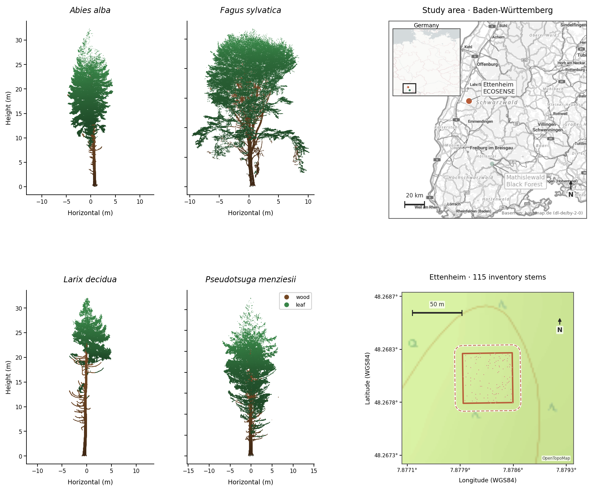
Mathislewald (Hinterzarten)
The Mathislewald site lies in the southern Black Forest near Hinterzarten, adjacent to Mathisleweiher (approximately 47.8847°N, 8.0885°E). It sits substantially higher than Ettenheim and experiences a cooler, more humid montane climate typical of the Black Forest uplands, with cooler summers, colder winters, and higher precipitation than the Upper Rhine fringe.The research plot analysed here measures approximately \(25\,\mathrm{m}\times 25\,\mathrm{m}\) (\(625\,\mathrm{m}^{2}\)). Within this footprint the field inventory records 34 stems. Composition is spruce-dominated: Norway spruce (Picea abies) accounts for 64.7% of inventoried stems, followed by European beech (Fagus sylvatica, 23.5%) and silver fir (Abies alba, 11.8%).
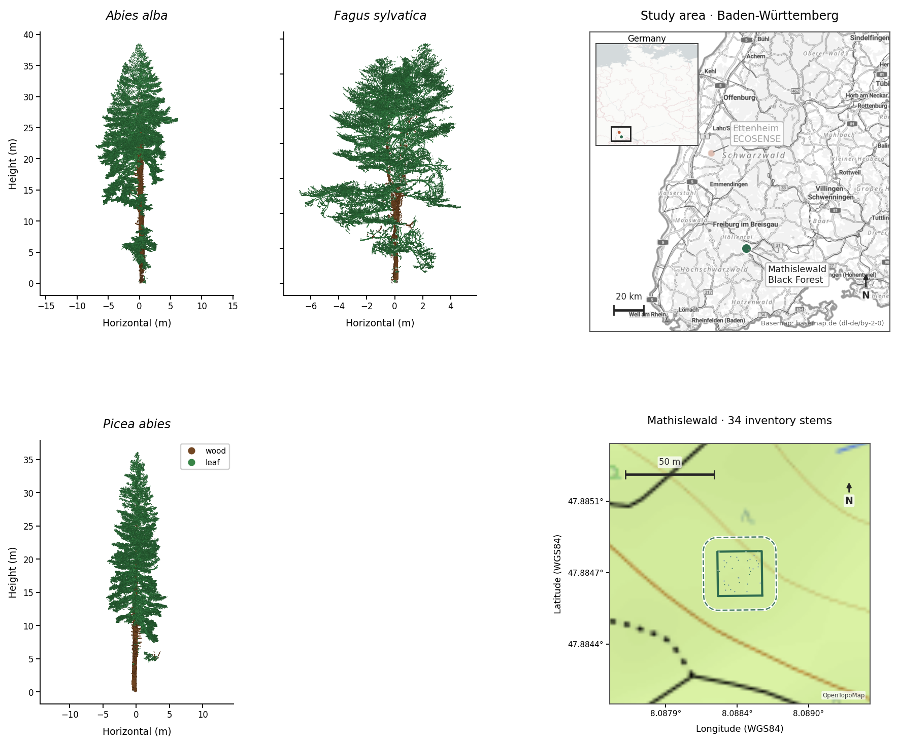
ECOSENSE and WaldAgil
The ECOSENSE project at the University of Freiburg develops advanced sensor networks to monitor and predict changes in forest ecosystems threatened by climate change [52]52. Chair of Sensor-based Geoinformatics, U. O. F. (2026). ECOSENSE - DFG Collaborative Research Centre.https://uni-freiburg.de/enr-geosense/research/ecosense/. Its sensing concept combines close-range remote sensing, vertical optical depth measurements, drone-based laser scanning, and satellite time series [52]52. Chair of Sensor-based Geoinformatics, U. O. F. (2026). ECOSENSE - DFG Collaborative Research Centre.https://uni-freiburg.de/enr-geosense/research/ecosense/.The Ettenheim research plot analysed in this thesis is part of the ECOSENSE forest site [53]53. ECOSENSE - SFB 1537, U. O. F. (2026). ECOSENSE Forest.https://uni-freiburg.de/ecosense/field-site-ecosense-forest. The ECOSENSE forest is located in the municipal forest of the city of Ettenheim and comprises a mixed forest system dominated by European beech with patches of spruce, oak, fir, Douglas fir and pine. Selected stands were chosen to support site infrastructure such as eddy covariance measurements and canopy access [53]53. ECOSENSE - SFB 1537, U. O. F. (2026). ECOSENSE Forest.https://uni-freiburg.de/ecosense/field-site-ecosense-forest.
WaldAgil aims to integrate technologies from precision forestry and Forstwirtschaft 4.0 into an agile framework for climate-resilient forest management [54,55]54. WaldAgil, U. O. F. (2026). WaldAgil.https://uni-freiburg.de/unr-waldagil/55. WaldAgil, U. O. F. (2026). WaldAgil Forschung.https://uni-freiburg.de/unr-waldagil/forschung/. It targets forest digitization at the level of individual trees and supports digital-twin based scenario planning, with drones, laser scanning, AI-based tree recognition, and augmented-reality interfaces as key components [54,55]54. WaldAgil, U. O. F. (2026). WaldAgil.https://uni-freiburg.de/unr-waldagil/55. WaldAgil, U. O. F. (2026). WaldAgil Forschung.https://uni-freiburg.de/unr-waldagil/forschung/.
Mathislewald provides the University of Freiburg with a 127 ha research and teaching forest near Hinterzarten that is used for teaching and research and is digitized with remote sensing methods [56]56. Professur für Waldwachstum und Dendroökologie, U. O. F. (2026). Forschungsinfrastruktur.https://uni-freiburg.de/unr-wwd/forschung/infrastruktur. In related digital twin and AR developments at the university, Mathislewald is named as a pilot region in the XR Future Forest Lab profile [57]57. Wissen über den Wald im Wandel (WWW 4.0), U. O. F. (2026). Steckbrief XR Future Forest Lab.https://uni-freiburg.de/www40/ki-projekte-im-forst/steckbrief-xr-future-forest-lab/. This context aligns with the single-tree digital twin direction targeted in WaldAgil.
Data available
The field inventory provides expert taxonomic and structural attributes for stems. Project descriptions explicitly note that traditional field measurement, including species determination and breast-height diameter assessment, is labour intensive, while laser scanning supports extraction of tree height, position, stem form, and crown dimensions [20,42-44,55]55. WaldAgil, U. O. F. (2026). WaldAgil Forschung.https://uni-freiburg.de/unr-waldagil/forschung/20. Liang, X., Kankare, V., Hyyppä, J., Wang, Y., Kukko, A., Haggrén, H., Yu, X., Kaartinen, H., Jaakkola, A., Guan, F., Holopainen, M., & Vastaranta, M. (2016). Terrestrial laser scanning in forest inventories. ISPRS Journal of Photogrammetry and Remote Sensing, 115, 63-77.https://doi.org/10.1016/j.isprsjprs.2016.01.00642. Liu, G., Wang, J., Dong, P., Chen, Y., & Liu, Z. (2018). Estimating individual tree height and diameter at breast height (DBH) from terrestrial laser scanning (TLS) data at plot level. Forests, 9(7), 398.https://doi.org/10.3390/f907039843. Kükenbrink, D., Marty, M., Ginzler, C., et al. (2022). Benchmarking laser scanning and terrestrial photogrammetry to extract forest inventory parameters in a complex temperate forest. International Journal of Applied Earth Observation and Geoinformation, 113, 102999.https://doi.org/10.1016/j.jag.2022.10299944. Cavalheiro, R., Molina-Valero, J. A., Hodge, G., Howell, T., & Acosta, J. J. (2026). Extraction of genetic test measurements from LiDAR cloud data. Journal of Forestry Research, 37, 58.https://doi.org/10.1007/s11676-026-02007-0. Single-tree biomass and carbon accounting in German greenhouse-gas reporting likewise rest on dendrometric stem attributes [47,49,50]49. Riedel, T., & Kändler, G. (2017). . Forstarchiv, 88(2), 31-38.https://doi.org/10.4432/0300-4112-88-3150. Tian, L., Wu, X., Tao, Y., Li, M., Qian, C., Liao, L., & Fu, W. (2023). Review of Remote Sensing-Based Methods for Forest Aboveground Biomass Estimation: Progress, Challenges, and Prospects. Forests, 14(6), 1086.https://doi.org/10.3390/f1406108647. Calders, K., Newnham, G., Burt, A., Murphy, S., Raumonen, P., Herold, M., Culvenor, D., Avitabile, V., Disney, M., Armston, J., & Kaasalainen, M. (2015). Nondestructive estimates of above-ground biomass using terrestrial laser scanning. Methods in Ecology and Evolution, 6(2), 198-208.https://doi.org/10.1111/2041-210X.12301.Point clouds used in this thesis were collected as terrestrial laser scanning (TLS) data and were used as the structural basis for manual instance reference building. In the broader sensing portfolios of ECOSENSE and WaldAgil, drone-based laser scanning is also part of the measurement concept [21,24,52,54]52. Chair of Sensor-based Geoinformatics, U. O. F. (2026). ECOSENSE - DFG Collaborative Research Centre.https://uni-freiburg.de/enr-geosense/research/ecosense/54. WaldAgil, U. O. F. (2026). WaldAgil.https://uni-freiburg.de/unr-waldagil/24. Guimarães, N., Pádua, L., Marques, P., Silva, N., Peres, E., & Sousa, J. J. (2020). Forestry Remote Sensing from Unmanned Aerial Vehicles: A Review Focusing on the Data, Processing and Potentialities. Remote Sensing, 12(6), 1046.https://doi.org/10.3390/rs1206104621. White, J. C., Coops, N. C., Wulder, M. A., Vastaranta, M., Hilker, T., & Tompalski, P. (2016). Remote Sensing Technologies for Enhancing Forest Inventories: A Review. Canadian Journal of Remote Sensing, 42(5), 619-641.https://doi.org/10.1080/07038992.2016.1207484. The present benchmark focuses on TLS so that the proximal geometric reference remains consistent across both sites [14,22,23,27]22. Newnham, G. J., Armston, J. D., Calders, K., Disney, M. I., Lovell, J. L., Schaaf, C. B., Strahler, A. H., & Danson, F. M. (2015). Terrestrial Laser Scanning for Plot-Scale Forest Measurement. Current Forestry Reports, 1, 239-251.https://doi.org/10.1007/s40725-015-0025-527. Wilkes, P., Lau, A., Disney, M., Calders, K., Burt, A., Gonzalez de Tanago, J., Bartholomeus, H., Brede, B., & Herold, M. (2017). Data acquisition considerations for terrestrial laser scanning of forest plots. Remote Sensing of Environment, 196, 140-153.https://doi.org/10.1016/j.rse.2017.04.03023. Béland, M., Parker, G., Sparrow, B., Harding, D., Chasmer, L., Phinn, S., Antonarakis, A., & Strahler, A. (2019). On promoting the use of lidar systems in forest ecosystem research. Forest Ecology and Management, 450, 117484.https://doi.org/10.1016/j.foreco.2019.11748414. Calders, K., Adams, J., Armston, J., Bartholomeus, H., Bauwens, S., Bentley, L. P., Chave, J., Danson, F. M., Demol, M., Disney, M., et al. (2020). Terrestrial laser scanning in forest ecology: Expanding the horizon. Remote Sensing of Environment, 251, 112102.https://doi.org/10.1016/j.rse.2020.112102.
State-of-the-art instance segmentation and species classification models are available for this point-cloud domain. Instance segmentation can be addressed by SegmentAnyTree, described as a sensor- and platform-agnostic pipeline for individual trees [40]40. Wielgosz, M., Puliti, S., Xiang, B., Schindler, K., & Astrup, R. (2024). SegmentAnyTree: A sensor and platform agnostic deep learning model for tree segmentation using laser scanning data. Remote Sensing of Environment, 313, 114367.https://doi.org/10.1016/j.rse.2024.114367, and by ForestMamba, a structure-aware model combining sparse Mamba state-space modelling with geometry-guided query initialization [41]41. Nguyen, T. T., Vu, T. A., Le, D. V., Kawanishi, Y., Komamizu, T., Ide, I., & Kattenborn, T. (2026). ForestMamba: Sparse Mamba with Geometry-guided Queries for 3D Forest Point Cloud Segmentation.https://doi.org/10.48550/arXiv.2606.01549https://arxiv.org/abs/2606.01549. Closely related automated-inventory and ground-based instance methods provide additional context for the benchmark design [29,32-35]33. Xiang, B., Wielgosz, M., Kontogianni, T., Peters, T., Puliti, S., Astrup, R., & Schindler, K. (2024). Automated forest inventory: Analysis of high-density airborne LiDAR point clouds with 3D deep learning. Remote Sensing of Environment, 305, 114078.https://doi.org/10.1016/j.rse.2024.11407832. Xiang, B., Wielgosz, M., Puliti, S., Král, K., Krůček, M., Missarov, A., & Astrup, R. (2025). ForestFormer3D: A Unified Framework for End-to-End Segmentation of Forest LiDAR 3D Point Clouds. In Proceedings of the IEEE/CVF International Conference on Computer Vision (ICCV) (pp. 24321-24331).35. Henrich, J., van Delden, J., Seidel, D., Kneib, T., & Ecker, A. S. (2024). TreeLearn: A deep learning method for segmenting individual trees from ground-based LiDAR forest point clouds. Ecological Informatics, 84, 102888.https://doi.org/10.1016/j.ecoinf.2024.10288834. Puliti, S., Pearse, G., Surový, P., Wallace, L., Hollaus, M., Wielgosz, M., & Astrup, R. (2023). FOR-instance: a UAV laser scanning benchmark dataset for semantic and instance segmentation of individual trees.https://doi.org/10.48550/arXiv.2309.01279https://arxiv.org/abs/2309.0127929. Cherlet, W., Dayal, K., Chen, S., Cooper, Z., Disney, M., Hanzl, A., Levick, S., Nightingale, J., Origo, N., Senf, C., Soenens, L., Terryn, L., Van den Broeck, W. A. J., & Calders, K. (2026). Benchmarking tree instance segmentation of terrestrial laser scanning point clouds. ISPRS Journal of Photogrammetry and Remote Sensing, 231, 230-247.https://doi.org/10.1016/j.isprsjprs.2025.10.033. Species classification is addressed by DetailView, which is described as a multi-view DenseNet architecture for tree species prediction [31]31. Puliti, S., Lines, E. R., Müllerová, J., Frey, J., Schindler, Z., Straker, A., Allen, M. J., Winiwarter, L., Rehush, N., Hristova, H., Murray, B., et al. (2025). Benchmarking tree species classification from proximally sensed laser scanning data: Introducing the FOR-species20K dataset. Methods in Ecology and Evolution, 16(4), 801-818.https://doi.org/10.1111/2041-210X.14503.
For evaluation, the field inventory species labels are mapped to the FOR-species20K taxonomy IDs used by DetailView and inventory labels that cannot be mapped to the local label set are excluded from species accuracy.
Manual instance references for evaluation were delineated with CloudCompare using the terrestrial point clouds. Each reference package provides stable instance identifiers and species prediction dimensions that allow direct comparison across instance sources.
Finally, the two study plots differ in footprint size and effective point density per unit area. In the provided tree-point reference packages, Ettenheim covers \(50\,\mathrm{m}\times 50\,\mathrm{m}\) with about \(20.5\) million tree points, which corresponds to about \(8.2\,\)k points per square meter. Mathislewald covers \(25\,\mathrm{m}\times 25\,\mathrm{m}\) with about \(12.9\) million tree points, which corresponds to about \(20.7\,\)k points per square meter. This density and annotation feasibility consideration informed the choice of a larger Ettenheim footprint and a smaller Mathislewald footprint while keeping both sites representative for their local species composition.
Methodology
The Background and Data sections establish that field inventory and terrestrial laser scanning (TLS) were already available for Ettenheim and Mathislewald. The methodological chain below therefore starts from those source products and documents how the analysis footprint was narrowed, how reference instances were built, how segmentation models were compared to that reference, how inventory stems were linked to manually delineated trees and how species classification was evaluated on the resulting matched set. All geospatial processing used the projected coordinate reference system EPSG:32632.
Inventory-guided spatial narrowing of the TLS clouds
The delivered TLS scenes extend beyond the inventoried stems. To restrict subsequent work to the area that is jointly supported by inventory and proximal geometry, inventory stem positions were treated as a planar point set and enclosed with a concave hull. A fixed buffer of \(10\,\mathrm{m}\) was then applied around that hull, and the buffered polygon was used to clip the TLS point cloud.At Ettenheim the concave hull was computed with Shapely's concave-hull routine using a ratio of \(0.05\) and without holes. At Mathislewald an adaptive ratio schedule was used \((0.2\), \(0.15\), \(0.25\), \(0.3\), \(0.1\), \(0.35\), \(0.4\), \(0.5\), \(1.0)\) until the hull perimeter contained at most \(120\) vertices; if no ratio satisfied that constraint the convex hull was used instead. In both cases the clip polygon was required to cover every valid inventory point. Clipping was performed in streaming fashion with laspy so that only points whose planimetric coordinates fell inside the buffered polygon were retained.
Bird's-eye verification plots were produced for both sites by overlaying a thinned view of the source point cloud, the inventory stem locations, the inner concave hull outline and the buffered clip boundary (Figure 3). These maps confirmed that the retained cloud surrounds the inventoried stand with a controlled margin rather than truncating stems at the inventory extent.
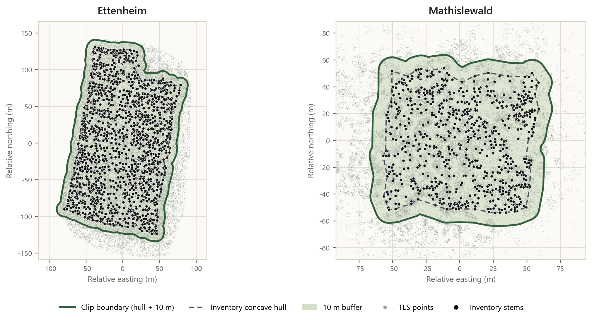
Subdivision into labelled subplots
The inventory-clipped clouds remain large relative to interactive three-dimensional editing. Each clipped scene was therefore partitioned into square subplots of \(25\,\mathrm{m}\times 25\,\mathrm{m}\) (\(625\,\mathrm{m}^{2}\)). The subplot grid was centred on the clip-polygon centroid. Only cells that intersected the clip polygon and retained more than \(1\,\mathrm{m}^{2}\) of clipped area were kept. Subplots were numbered in a ring-clockwise order starting from the centre (tile_001, tile_002, tile_003, ...).Within each subplot, preliminary ForestMamba instance labels already present in the source clouds were used to export one LAZ file per predicted tree, together with ground and residual catch-all layers. Trees with any point within \(0.12\,\mathrm{m}\) of the outer clip boundary were excluded from the valid tree set so that incomplete edge crowns would not enter later reference construction. The resulting subplot layouts were mapped and labelled for both sites (Figure 4).
Manual reference construction and all subsequent benchmarks reported in this thesis focus on the subplots that were completed as CloudCompare projects: Ettenheim tile_001-tile_004 (approximately \(50\,\mathrm{m}\times 50\,\mathrm{m}\) of analysed footprint) and Mathislewald tile_001 (approximately \(25\,\mathrm{m}\times 25\,\mathrm{m}\)). The remaining subplots of the clipped scenes were retained as an organised archive but were not manually annotated. Plot-scale TLS acquisition and interactive editing of dense temperate scenes remain labour-intensive even with modern scanners [20,22,27,43]27. Wilkes, P., Lau, A., Disney, M., Calders, K., Burt, A., Gonzalez de Tanago, J., Bartholomeus, H., Brede, B., & Herold, M. (2017). Data acquisition considerations for terrestrial laser scanning of forest plots. Remote Sensing of Environment, 196, 140-153.https://doi.org/10.1016/j.rse.2017.04.03020. Liang, X., Kankare, V., Hyyppä, J., Wang, Y., Kukko, A., Haggrén, H., Yu, X., Kaartinen, H., Jaakkola, A., Guan, F., Holopainen, M., & Vastaranta, M. (2016). Terrestrial laser scanning in forest inventories. ISPRS Journal of Photogrammetry and Remote Sensing, 115, 63-77.https://doi.org/10.1016/j.isprsjprs.2016.01.00622. Newnham, G. J., Armston, J. D., Calders, K., Disney, M. I., Lovell, J. L., Schaaf, C. B., Strahler, A. H., & Danson, F. M. (2015). Terrestrial Laser Scanning for Plot-Scale Forest Measurement. Current Forestry Reports, 1, 239-251.https://doi.org/10.1007/s40725-015-0025-543. Kükenbrink, D., Marty, M., Ginzler, C., et al. (2022). Benchmarking laser scanning and terrestrial photogrammetry to extract forest inventory parameters in a complex temperate forest. International Journal of Applied Earth Observation and Geoinformation, 113, 102999.https://doi.org/10.1016/j.jag.2022.102999.
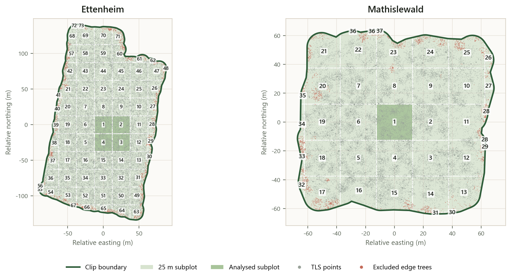
Manual instance delineation in CloudCompare
For each analysed subplot the exported LAZ content was imported into CloudCompare and saved as a modern CloudCompare project (.bin, CCB2). Starting from the preliminary ForestMamba instances, layers were interactively split, merged and cleaned until each retained tree layer corresponded to a single physical stem and crown. Residual non-tree or ambiguous material was kept in dedicated catch-all layers (for example ground_sem0, misc_inst-1 and related misc groups) rather than being forced into a tree identity.After editing, project hierarchy was standardised so that each tree group contained one cloud, path suffixes were stripped from display names and cloud names were aligned with their parent groups. Tree layers followed a stable tree_\#\#\#\#\# naming pattern, with occasional fragment suffixes where an incomplete piece still required temporary separation. Each completed project was spot-checked in the CloudCompare graphical interface by listing the layer tree and inspecting whether any retained tree layer still mixed multiple stems or left an obvious crown incomplete.
These manually refined CloudCompare layers constitute the geometric ground truth for instance-segmentation evaluation. Inventory matching, described later, is a separate step used for species evaluation and is not required to define the segmentation reference. Classical geometric reconstruction tools remain available for related structural workflows [36-39]36. Raumonen, P., Kaasalainen, M., Åkerblom, M., Kaasalainen, S., Kaartinen, H., Vastaranta, M., Holopainen, M., Disney, M., & Lewis, P. (2013). Fast Automatic Precision Tree Models from Terrestrial Laser Scanner Data. Remote Sensing, 5(2), 491-520.https://doi.org/10.3390/rs502049137. Burt, A., Disney, M., & Calders, K. (2019). Extracting individual trees from lidar point clouds using treeseg. Methods in Ecology and Evolution, 10(3), 438-445.https://doi.org/10.1111/2041-210X.1312138. Hackenberg, J., Spiecker, H., Calders, K., Disney, M., & Raumonen, P. (2015). SimpleTree - An Efficient Open Source Tool to Build Tree Models from TLS Clouds. Forests, 6(11), 4245-4294.https://doi.org/10.3390/f611424539. Lowe, T., & Stepanas, K. (2021). RayCloudTools: A Concise Interface for Analysis and Manipulation of Ray Clouds. IEEE Access, 9, 81461-81470.https://doi.org/10.1109/ACCESS.2021.3084954, but were not used as the geometric reference here.
Instance-segmentation evaluation protocol
Automatic instance predictions were compared with the manual CloudCompare reference under a shared point support. All points belonging to the analysed subplot projects (tree layers, catch-alls and ground) defined the evaluation set \(X_{\mathrm{eval}}\). The same XYZ locations were then extracted from the ForestMamba and SegmentAnyTree products so that every point carried a manual ground-truth instance identifier and a predicted instance identifier. Ground, catch-all and non-tree material received ground-truth identifier-1. Predicted SegmentAnyTree labels used in the final comparison were taken from absolute-coordinate partner products (PredInstance_SAT) rather than from earlier height-normalized transfers.Matching followed the individual-tree evaluation style of ForestFormer3D [32]32. Xiang, B., Wielgosz, M., Puliti, S., Král, K., Krůček, M., Missarov, A., & Astrup, R. (2025). ForestFormer3D: A Unified Framework for End-to-End Segmentation of Forest LiDAR 3D Point Clouds. In Proceedings of the IEEE/CVF International Conference on Computer Vision (ICCV) (pp. 24321-24331)., consistent with related automated-inventory and TLS benchmarking protocols [29,30,33,34]33. Xiang, B., Wielgosz, M., Kontogianni, T., Peters, T., Puliti, S., Astrup, R., & Schindler, K. (2024). Automated forest inventory: Analysis of high-density airborne LiDAR point clouds with 3D deep learning. Remote Sensing of Environment, 305, 114078.https://doi.org/10.1016/j.rse.2024.11407829. Cherlet, W., Dayal, K., Chen, S., Cooper, Z., Disney, M., Hanzl, A., Levick, S., Nightingale, J., Origo, N., Senf, C., Soenens, L., Terryn, L., Van den Broeck, W. A. J., & Calders, K. (2026). Benchmarking tree instance segmentation of terrestrial laser scanning point clouds. ISPRS Journal of Photogrammetry and Remote Sensing, 231, 230-247.https://doi.org/10.1016/j.isprsjprs.2025.10.03334. Puliti, S., Pearse, G., Surový, P., Wallace, L., Hollaus, M., Wielgosz, M., & Astrup, R. (2023). FOR-instance: a UAV laser scanning benchmark dataset for semantic and instance segmentation of individual trees.https://doi.org/10.48550/arXiv.2309.01279https://arxiv.org/abs/2309.0127930. Wang, Y., Hyyppä, J., Liang, X., Kaartinen, H., Yu, X., Lindberg, E., Holmgren, J., Qin, Y., Mallet, C., Ferraz, A., Torabzadeh, H., Morsdorf, F., Zhu, L., Liu, J., & Alho, P. (2016). International Benchmarking of the Individual Tree Detection Methods for Modeling 3-D Canopy Structure for Silviculture and Forest Ecology Using Airborne Laser Scanning. IEEE Transactions on Geoscience and Remote Sensing, 54(9), 5011-5027.https://doi.org/10.1109/TGRS.2016.2543225. Point-count Intersection-over-Union (IoU) was computed between each predicted instance and each ground-truth tree. Predicted instances with fewer than \(100\) points were discarded in the primary protocol (a common noise filter for tiny fragments). As a sensitivity check we repeated plot-level matching at \(n_{\mathrm{min}}\in\{0,25,50,100,200\}\). Remaining predictions were assigned to ground-truth trees by greedy one-to-one maximisation of IoU. A match was accepted only when IoU was at least \(\tau=0.5\). As a further sensitivity check we also solved the same IoU matrix with the Hungarian algorithm (global bipartite assignment maximising total IoU, still rejecting pairs below \(\tau\)) and compared plot-level precision, recall, F1 and coverage at \(\tau=0.5\). The primary reported tables and figures retain greedy matching with \(n_{\mathrm{min}}=100\). Label transfer onto \(X_{\mathrm{eval}}\) used exact millimetre XYZ hashing where possible and nearest-neighbour fill within \(0.05\,\mathrm{m}\) otherwise.
From the matched assignments we computed precision, recall, F1-score and coverage (mean over ground-truth trees of the best IoU, without the \(\tau\) gate), together with true-positive, false-positive and false-negative counts. Secondary diagnostics recorded over-segmentation and under-segmentation patterns using multi-overlap inspection at IoU \(\ge 0.25\). The same matching was repeated for a threshold sweep \(\tau\in\{0.3,0.4,0.5,0.6,0.7\}\) and for per-subplot strata. Per-tree pairwise F1 was additionally related to simple structural covariates derived from the manual clouds (height as the difference between the 99th and 5th percentiles of \(z\), planimetric nearest-neighbour distance and a convex-hull volume proxy) so that later interpretation can separate detection failures from delineation failures. Associations used two-sided Spearman rank correlations on per-tree scores. Trees within a subplot are spatially dependent, so \(N\) trees are not \(N\) independent experimental replicates (Ettenheim: four subplots; Mathislewald: one). We therefore treat that battery as exploratory: uncorrected \(p<0.05\) is used for narrative emphasis and we still report \(\rho\) and \(p\) for non-significant associations, while Benjamini-Hochberg false-discovery-rate \(q\)-values within each site provide a multiplicity-aware sensitivity summary. Effect sizes (tercile means and \(\rho\)) are emphasised over binary significance. ForestFormer3D itself was not run as a third predictor; it provided only the evaluation template.
Visual co-registration of inventory and manual trees
Before formal inventory assignment, inventory stem positions were inspected against the manually segmented trees in plan view. A local ground surface was fitted to the manually labelled ground points of each subplot and a thin breast-height slice was extracted at \(1.3\,\mathrm{m}\) above ground along the local surface normal, with a tolerance of \(\pm 0.05\,\mathrm{m}\). Inventory stems were drawn as circles whose radii reflected recorded diameters at breast height.These overlays were used to check whether residual geospatial offset between inventory coordinates and the TLS scene would systematically prevent matching. Where a stem was visibly offset from its inventory marker but clearly represented the same tree on the basis of position, height and diameter context, the association was retained for later assignment rather than discarded as a geolocation conflict. At Mathislewald a translational shift of the inventory overlay was estimated from paired stem markers before final matching; at Ettenheim interactive overlay adjustment was available for the same visual check. Figure 5 shows the breast-height overlays used for this inspection at both sites.
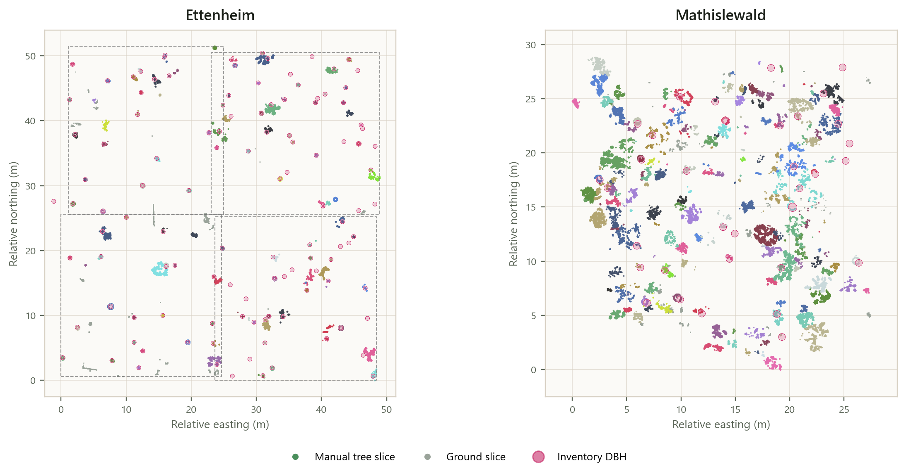
Exclusive assignment of inventory stems to trees
Inventory stems and manual tree layers were then linked by an exclusive one-to-one rule on the same breast-height geometry. For each inventory stem and each manual layer the planimetric distance between stem centre and layer breast-height centroid was required to satisfy equation dist r_inv + r_layer + 0.75 m, equation where \(r_{\mathrm{inv}}\) is the inventory radius at breast height and \(r_{\mathrm{layer}}\) is the radius of the layer's breast-height point envelope. Among geometrically eligible candidates, assignment was exclusive: each inventory stem and each layer could enter at most one pair.When several layers lay within \(0.75\,\mathrm{m}\) of the nearest eligible distance to the same inventory stem, ties were broken with an attribute cost based on the logarithmic diameter ratio and the relative height difference between inventory and layer. Incomplete stubs shorter than \(3\,\mathrm{m}\) were strongly penalised when competing for a real inventory stem, and layers with more points were mildly preferred when other cues were similar. A small number of visually confirmed but geometrically awkward pairs were entered through an explicit override list after inspection, while layers known to be unsuitable for species evaluation were excluded from the matched set.
Unmatched inventory stems and unmatched manual layers were reviewed separately. Unmatched inventory positions were visualised as vertical marker poles in the three-dimensional scene to support inspection of possible missed trees, incomplete delineations or inventory points outside the annotated subplot. Unmatched manual layers were inspected for over-split fragments, edge trees and non-tree residuals. Only exclusive inventory-matched manual trees were retained for species classification. Species-classification performance is therefore conditional on successful inventory-to-instance registration (including visual overrides where used) and should not be interpreted as plot-wide classification accuracy on every manual or automatic tree. Stable instance identifiers were then written for those stems: at Ettenheim \(\mathrm{PredInstance}=\mathrm{plot}\times 1000+\mathrm{tree}\), and at Mathislewald \(\mathrm{PredInstance}\) followed the inventory tree identifier.
Species classification with DetailView
DetailView [31]31. Puliti, S., Lines, E. R., Müllerová, J., Frey, J., Schindler, Z., Straker, A., Allen, M. J., Winiwarter, L., Rehush, N., Hristova, H., Murray, B., et al. (2025). Benchmarking tree species classification from proximally sensed laser scanning data: Introducing the FOR-species20K dataset. Methods in Ecology and Evolution, 16(4), 801-818.https://doi.org/10.1111/2041-210X.14503 was applied to the inventory-matched packages (inference support is acknowledged separately). Inference used the European model region, tookPredInstance as the tree identifier and returned point-wise species identifiers together with associated probabilities. Probabilities were averaged over \(50\) augmented forward passes per tree, following the DetailView practice used in the FOR-species20K benchmark setting. Restricting species evaluation to inventory-matched stems follows the broader observation that taxonomic products inherit both geometric delineation quality and the completeness of field labels [13,28,31]28. Fassnacht, F. E., Latifi, H., Sterenczak, K., Modzelewska, A., Lefsky, M., Waser, L. T., Straub, C., & Ghosh, A. (2016). Review of studies on tree species classification from remotely sensed data. Remote Sensing of Environment, 186, 64-87.https://doi.org/10.1016/j.rse.2016.08.01313. Pu, R. (2021). Mapping Tree Species Using Advanced Remote Sensing Technologies: A State-of-the-Art Review and Perspective. Journal of Remote Sensing, 9812624.https://doi.org/10.34133/2021/981262431. Puliti, S., Lines, E. R., Müllerová, J., Frey, J., Schindler, Z., Straker, A., Allen, M. J., Winiwarter, L., Rehush, N., Hristova, H., Murray, B., et al. (2025). Benchmarking tree species classification from proximally sensed laser scanning data: Introducing the FOR-species20K dataset. Methods in Ecology and Evolution, 16(4), 801-818.https://doi.org/10.1111/2041-210X.14503.To quantify how instance source affects taxonomic prediction on a fixed stem set, DetailView was run on four instance tracks that share the same inventory-matched stems: (i) the manual CloudCompare instances, (ii) SegmentAnyTree instances, (iii) ForestMamba instances and (iv) ForestMamba instances after an additional BluePoint refinement pass intended to reduce previously unresolved clusters. The returned point clouds preserved the original geometry and stored separate species_id and species_prob dimensions for each track. Trees missed by automatic segmentation outside that matched set do not enter the stem-level scores, so the ablation measures classification given instances rather than end-to-end species-map accuracy.
Local analysis then aggregated each track to the stem level by taking the mode of the non-nodata species identifier inside every PredInstance (nodata code \(255\) ignored). Inventory species names were mapped to the FOR-species20K taxonomy used by DetailView (European beech \(\rightarrow 10\), silver fir \(\rightarrow 0\), Norway spruce \(\rightarrow 14\), Douglas fir \(\rightarrow 25\), European larch \(\rightarrow 13\)). Predictions outside the locally present mapped classes were treated as open-set relative to the plot label set.
Stem-level comparisons were summarised with overall accuracy, balanced accuracy, macro-averaged precision, recall and F1-score and weighted F1-score. Uncertainty for overall accuracy on each site-level track was assessed with percentile bootstrap intervals (\(1000\) resamples, fixed seed). Differences between the manual track and each automatic track on the same stems were summarised with paired percentile bootstrap intervals on the stem-wise accuracy gap \(\Delta\mathrm{OA}\) (and likewise for macro F1 where reported), resampling shared stem indices with replacement. Complementary summaries included row-normalized confusion matrices for every instance track, stem-level label agreement between tracks, per-class F1 by instance source, a conifer-versus-broadleaf collapse, overall accuracy by \(2\,\mathrm{m}\) height strata, and overall-accuracy gaps that contrast the manual-instance track with each automatic-instance track on the same stems. Platform splits such as TLS versus mobile or unmanned laser scanning were not applicable because each plot uses a single proximal TLS modality.
Analysis products and intended inference
The pipeline yields three families of analysis products. First, subplot-wise and pooled instance-segmentation tables and figures quantify detection and delineation of ForestMamba and SegmentAnyTree against the manual CloudCompare reference, including behaviour across IoU thresholds and structural covariates. Second, exclusive match manifests linking inventory stems to trees document which stems enter the taxonomic evaluation and which inventory or layer residuals remain unmatched after geometric and visual review. Third, DetailView stem-level tables and figures quantify taxonomic agreement with inventory labels under manual and automatic instance sources and isolate the change attributable to switching the instance track. Inventory-matched stems were further joined to the height, nearest-neighbour and hull-volume covariates of their matched manual layers so that species accuracy could be stratified by the same structural axes used for instance F1, again using exploratory two-sided Spearman tests with Benjamini-Hochberg \(q\)-values within site as a multiplicity-aware sensitivity summary.These products are intended to answer, without circular use of inventory as geometric ground truth, (i) how well current instance-segmentation models recover manually verified trees in these temperate TLS scenes under this reference, (ii) how accurately DetailView recovers inventory taxonomy when instances are taken from the manual reference on matched stems and (iii) how much changing the instance source on those same stems changes stem-level species classification relative to the manual-instance baseline. Numerical outcomes are reported in the Results section.
Results
Observational overview of the prepared scenes
After inventory-guided concave-hull clipping and \(25\,\mathrm{m}\) subplotting, the analysed footprints are the manually completed CloudCompare projects: Ettenheim subplotstile_001-tile_004 and Mathislewald subplot tile_001. In plan view the inventoried stems sit inside the buffered clip, and the annotated subplots occupy the central portion of that clip (see Methodology Figures 3 and 4).Qualitative instance colourings on the first subplot of each site show the same point support under three labelings: the manual CloudCompare reference, ForestMamba and SegmentAnyTree (Figures 6 and 7). Crowns and stems appear as discrete coloured objects in the manual panels; the automatic panels place predicted instances on the same geometry.
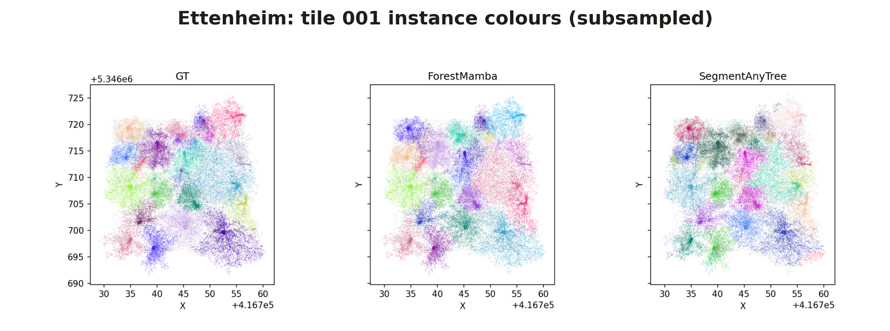
tile_001: qualitative instance colouring for the manual reference, ForestMamba and SegmentAnyTree on a shared subsampled point support.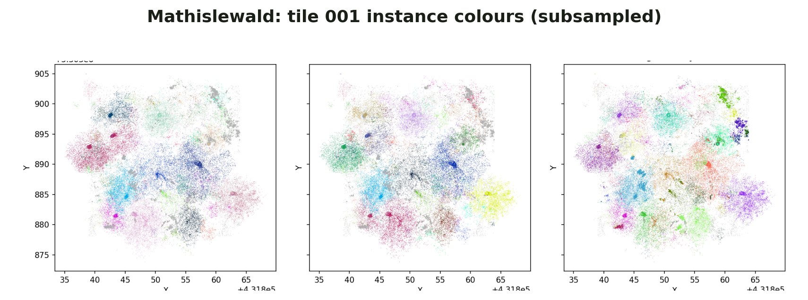
tile_001: qualitative instance colouring for the manual reference, ForestMamba and SegmentAnyTree on a shared subsampled point support.Breast-height plan views place inventory stem circles on the manually delineated layers at both sites (Figure 8). On the \(1.3\,\mathrm{m}\pm 0.05\,\mathrm{m}\) slice, inventory markers are distributed among the coloured manual trees. Some markers sit on or near a layer centroid; others are offset from the nearest coloured stem while still corresponding to a visually identifiable tree in the surrounding cloud.

Manual reference scope
The segmentation reference comprises every retained manual tree layer in the analysed CloudCompare projects, with ground and catch-all material coded as background (gt_id=-1). Table 1 summarises the resulting evaluation supports.| Site | Subplots | \(N_GT\) | Tree points | Total \(X_eval\) points |
|---|---|---|---|---|
| Ettenheim | 001-004 | 128 | 22 714 670 | 26 997 057 |
| Mathislewald | 001 | 72 | 14 605 364 | 24 260 295 |
Per-subplot ground-truth tree counts at Ettenheim were 25, 41, 38 and 24 for tile_001 to tile_004. At Mathislewald the single annotated subplot contributed 72 merged ground-truth trees. These counts define the denominator for recall and related detection metrics below. They are distinct from the later inventory-matched stem counts used for species classification.
Instance segmentation
Matching used point-count IoU with greedy one-to-one assignment at \(\tau=0.5\) and a minimum of 100 predicted points per candidate instance. A Hungarian assignment on the same IoU matrices (still rejecting pairs below \(\tau\)) reproduced the greedy plot-level precision, recall, F1 and coverage to numerical identity on both sites and both models at \(\tau=0.5\), so the primary tables retain the greedy protocol. Varying the minimum predicted-instance size over \(n_{\mathrm{min}}\in\{0,25,50,100,200\}\) changed F1 by at most a few percentage points and did not alter model ranking or the Mathislewald SegmentAnyTree failure (F1 remained near 21% across thresholds); the default \(n_{\mathrm{min}}=100\) is therefore not driving the main conclusions. Figure 9 summarises precision, recall, F1-score and coverage for ForestMamba and SegmentAnyTree on both sites. Table 2 reports the corresponding values together with prediction counts and confusion counts.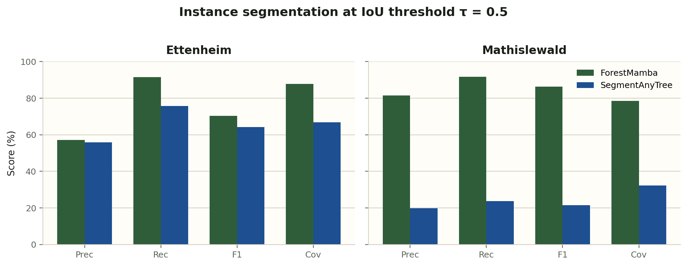
| Site | Method | Prec | Rec | F1 | Cov | \(N_pred\) | TP | FP | FN |
|---|---|---|---|---|---|---|---|---|---|
| Ettenheim | ForestMamba | 57.1 | 91.4 | 70.3 | 87.7 | 205 | 117 | 88 | 11 |
| Ettenheim | SegmentAnyTree | 55.7 | 75.8 | 64.2 | 66.9 | 174 | 97 | 77 | 31 |
| Mathislewald | ForestMamba | 81.5 | 91.7 | 86.3 | 78.4 | 81 | 66 | 15 | 6 |
| Mathislewald | SegmentAnyTree | 19.8 | 23.6 | 21.5 | 32.2 | 86 | 17 | 69 | 55 |
At Ettenheim the per-subplot breakdown at \(\tau=0.5\) is shown in Figure 10 and Table 3. ForestMamba F1 ranged from 63.0% on tile_004 to 72.7% on tile_001. SegmentAnyTree F1 ranged from 46.5% on tile_003 to 65.4% on tile_002.
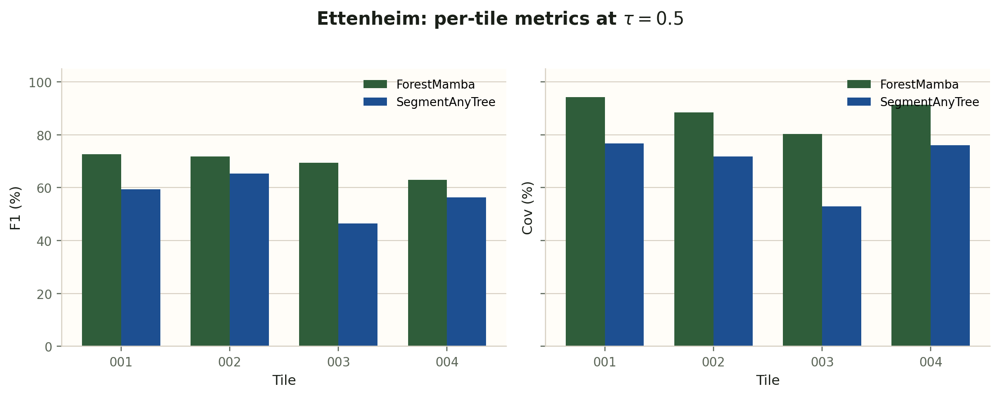
| Subplot | \(N_GT\) | FM F1 | FM Cov | SAT F1 | SAT Cov | FM TP/FP/FN | SAT TP/FP/FN |
|---|---|---|---|---|---|---|---|
| 001 | 25 | 72.7 | 94.3 | 59.5 | 76.8 | 24/17/1 | 22/27/3 |
| 002 | 41 | 71.8 | 88.4 | 65.4 | 71.9 | 37/25/4 | 34/29/7 |
| 003 | 38 | 69.5 | 80.3 | 46.5 | 52.9 | 33/24/5 | 23/38/15 |
| 004 | 24 | 63.0 | 91.4 | 56.3 | 76.1 | 23/26/1 | 20/27/4 |
Repeating the match over \(\tau\in\{0.3,0.4,0.5,0.6,0.7\}\) produced the curves in Figures 11 and 12. At Ettenheim, ForestMamba F1 moved from 70.9% at \(\tau=0.3\) to 70.3% at \(\tau=0.5\) and 66.1% at \(\tau=0.7\); SegmentAnyTree F1 moved from 68.9% to 64.2% to 50.3% over the same thresholds. At Mathislewald, ForestMamba F1 moved from 90.2% to 86.3% to 68.0%; SegmentAnyTree F1 moved from 43.0% to 21.5% to 10.1%.
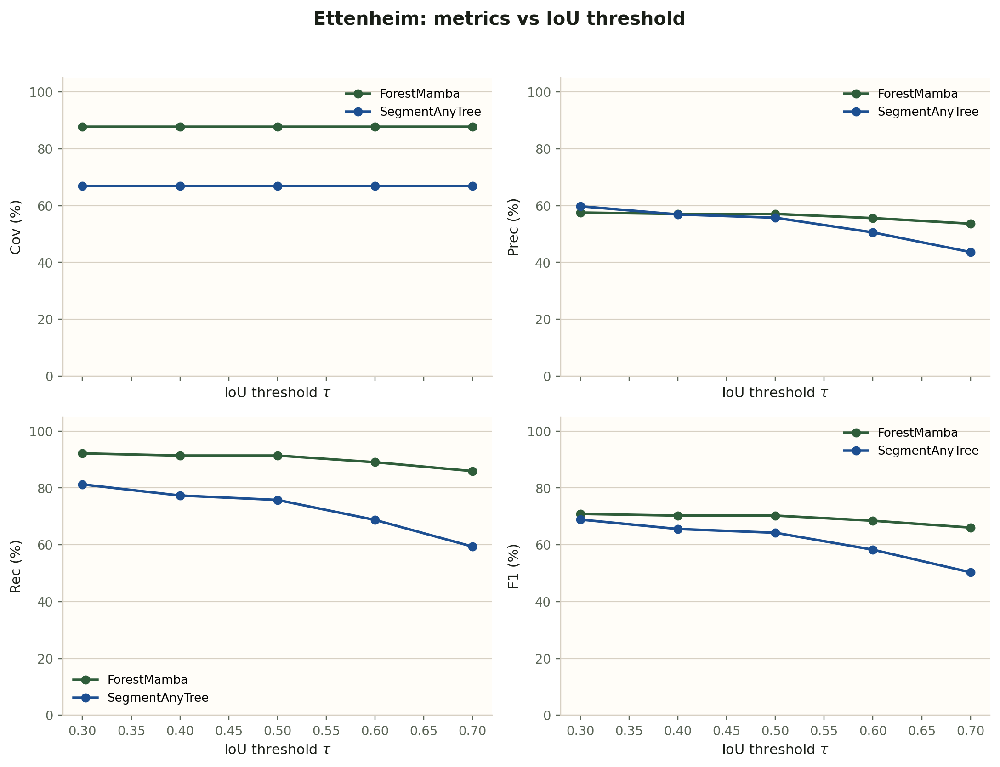
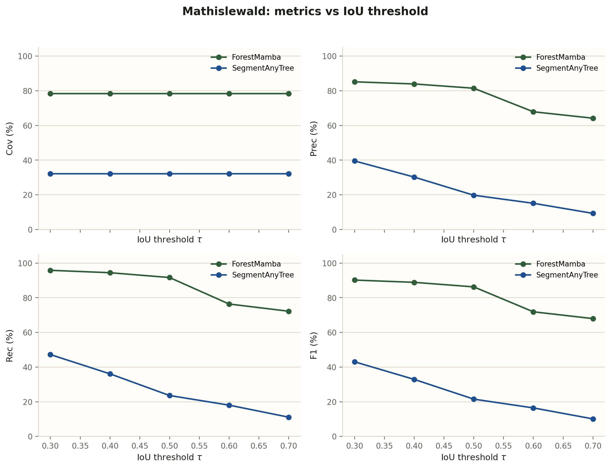
Per-ground-truth maximum IoU distributions are shown in Figures 13 and 14. Error-taxonomy counts at \(\tau=0.5\) are summarised in Figures 15 and 16 and Table 4. Spatial centroids of true positives, false negatives and false positives appear in Figures 17 and 18.
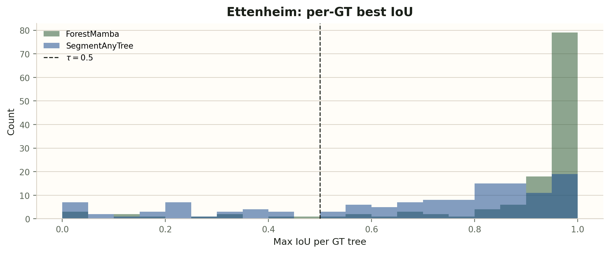
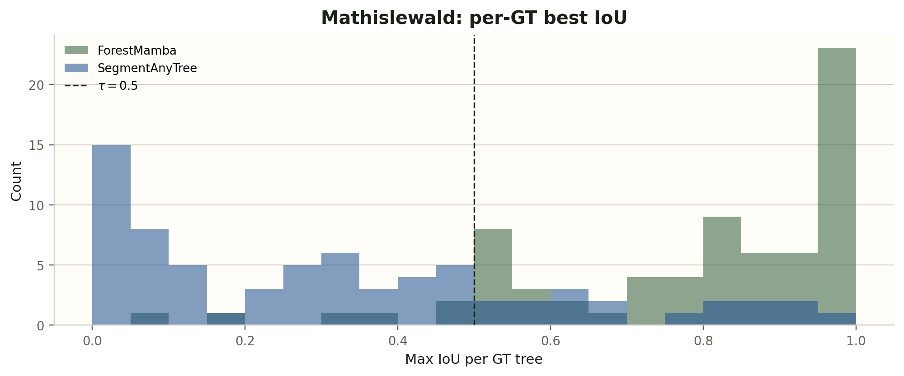
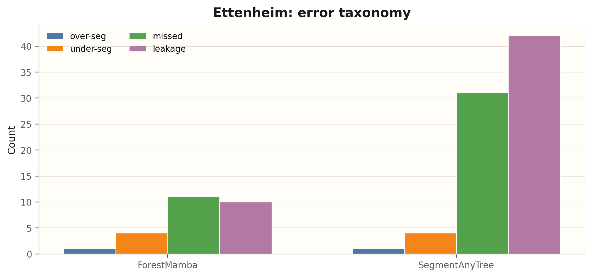
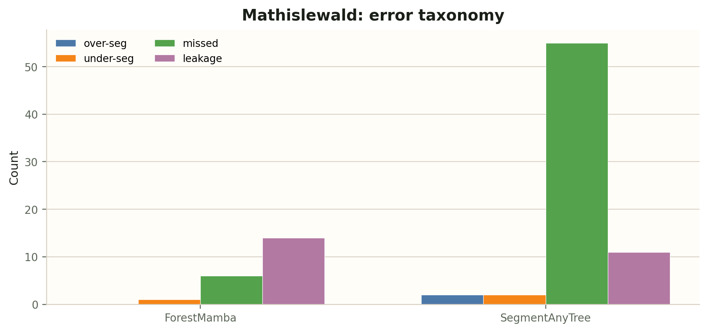
| Site | Method | Over-seg. | Under-seg. | Missed | Leakage-flagged TP |
|---|---|---|---|---|---|
| Ettenheim | ForestMamba | 1 | 4 | 11 | 10 |
| Ettenheim | SegmentAnyTree | 1 | 4 | 31 | 42 |
| Mathislewald | ForestMamba | 0 | 1 | 6 | 14 |
| Mathislewald | SegmentAnyTree | 2 | 2 | 55 | 11 |
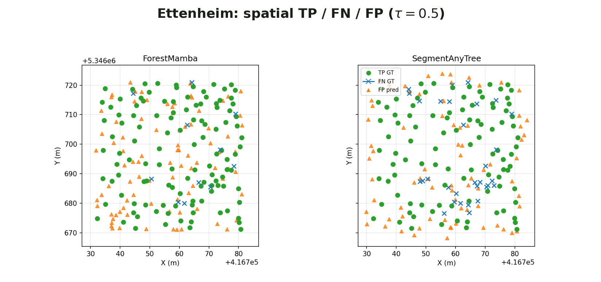
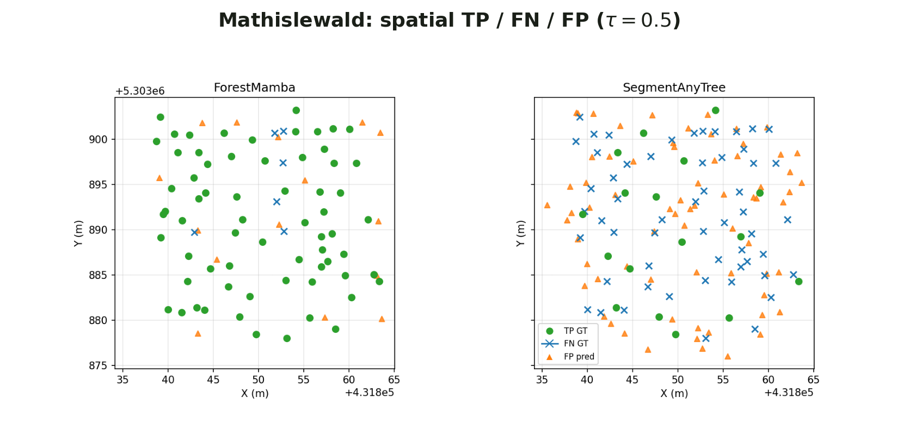
Macro hard F1 (mean of per-tree hard F1 scores) is reported beside plot-level F1 in Table 5 and Figure 19. At Ettenheim, ForestMamba macro hard F1 was 88.3% (95% CI 83.2-92.9) against a plot F1 of 70.3%; SegmentAnyTree macro hard F1 was 67.5% (60.9-74.0) against a plot F1 of 64.2%. At Mathislewald, ForestMamba macro hard F1 was 82.0% (74.9-88.0) against a plot F1 of 86.3%; SegmentAnyTree macro hard F1 was 19.7% (11.8-28.4) against a plot F1 of 21.5%.
| Site | Method | Plot F1 | Macro hard F1 | 95% CI |
|---|---|---|---|---|
| Ettenheim | ForestMamba | 70.3 | 88.3 | 83.2-92.9 |
| Ettenheim | SegmentAnyTree | 64.2 | 67.5 | 60.9-74.0 |
| Mathislewald | ForestMamba | 86.3 | 82.0 | 74.9-88.0 |
| Mathislewald | SegmentAnyTree | 21.5 | 19.7 | 11.8-28.4 |
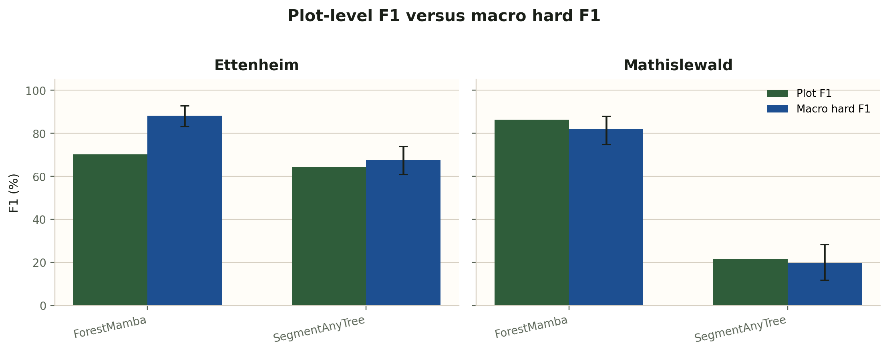
Per-tree hard F1 was related to three structural covariates derived from the manual clouds: height (\(z_{99}-z_{05}\)), planimetric nearest-neighbour distance to the closest other ground-truth centroid and a 3D convex-hull volume proxy (Figures 20, 21 and 22; Table 6). Each point is one manual ground-truth tree. Black diamonds mark tercile means. Spearman rank correlations are annotated per panel. These Spearman tests are exploratory: trees within subplots are spatially dependent, narrative emphasis uses two-sided uncorrected \(p<0.05\), non-significant associations are still quoted with their \(p\)-values, and Benjamini-Hochberg \(q\)-values within site are reported in the correlation tables as a multiplicity-aware sensitivity summary.
At Ettenheim (\(N=128\)), hard F1 increased from short to tall trees for both models (ForestMamba tercile means 79.2% / 89.9% / 95.8%; SegmentAnyTree 51.5% / 64.1% / 86.9%). The Spearman association with height was non-significant for ForestMamba (\(\rho=0.04\), \(p=0.68\)) and significant for SegmentAnyTree (\(\rho=0.19\), \(p=0.032\)). Nearest-neighbour distance showed a clearer packing signal: crowded stems (low NN) had mean hard F1 of 75.0% (ForestMamba) and 41.9% (SegmentAnyTree), versus 97.5% and 87.2% in the most open tercile. Spearman \(\rho\) was \(0.28\) (\(p=0.0016\)) for ForestMamba and \(0.41\) (\(p<0.001\)) for SegmentAnyTree; partial correlations residualising on \(\log(1+n_{\mathrm{points}})\) remained positive (\(0.25\) and \(0.35\)). Hull volume tracked the same direction as size (ForestMamba terciles 74.5% / 93.0% / 97.5%; SegmentAnyTree 46.6% / 74.2% / 82.0%), but neither correlation met \(p<0.05\) (ForestMamba \(\rho=0.08\), \(p=0.36\); SegmentAnyTree \(\rho=0.17\), \(p=0.052\)).
At Mathislewald (\(N=72\)), height and hull volume separated success more strongly than nearest-neighbour spacing. ForestMamba hard F1 rose from 75.1% in the lowest height tercile to 91.2% in the highest (\(\rho=0.34\), \(p=0.0036\)); SegmentAnyTree rose from 3.1% to 43.5% (\(\rho=0.56\), \(p<0.001\)). Hull-volume terciles were 69.8% / 86.3% / 90.0% for ForestMamba (\(\rho=0.27\), \(p=0.020\)) and 6.3% / 6.0% / 46.8% for SegmentAnyTree (\(\rho=0.54\), \(p<0.001\)). Nearest-neighbour associations were non-significant at \(p<0.05\) (ForestMamba \(\rho=0.16\), \(p=0.19\); SegmentAnyTree \(\rho=0.02\), \(p=0.87\)), with open-tercile means only modestly above crowded ones for ForestMamba (89.4% versus 77.3%) and flat for SegmentAnyTree (22.0% versus 23.2%).
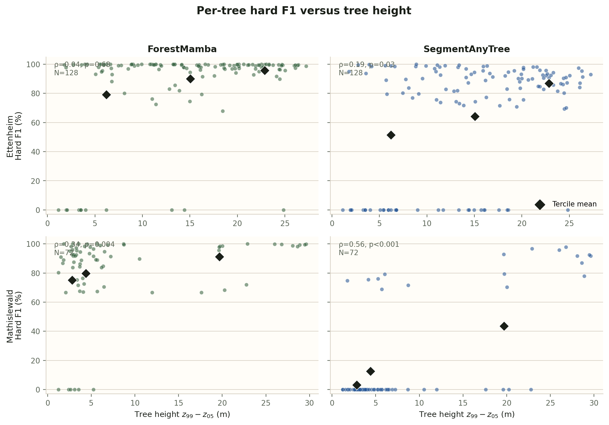
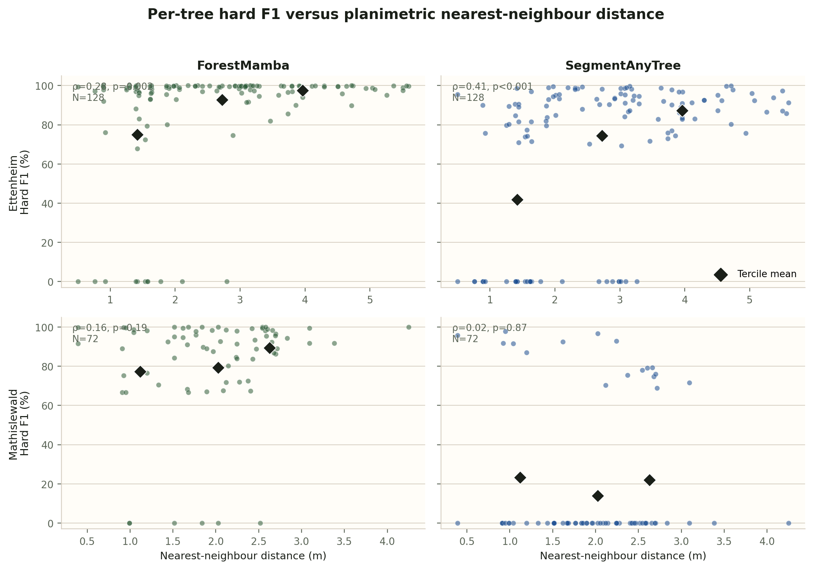
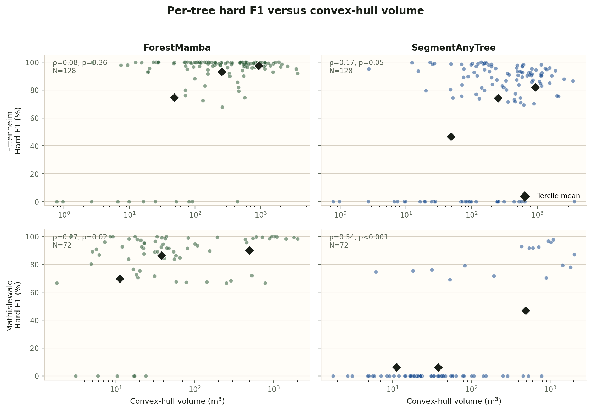
| Site | Covariate | ForestMamba | SegmentAnyTree |
|---|---|---|---|
| Ettenheim | Height | 79.2 / 89.9 / 95.8 | 51.5 / 64.1 / 86.9 |
| Ettenheim | Nearest neighbour | 75.0 / 92.8 / 97.5 | 41.9 / 74.5 / 87.2 |
| Ettenheim | Hull volume | 74.5 / 93.0 / 97.5 | 46.6 / 74.2 / 82.0 |
| Mathislewald | Height | 75.1 / 79.8 / 91.2 | 3.1 / 12.5 / 43.5 |
| Mathislewald | Nearest neighbour | 77.3 / 79.4 / 89.4 | 23.2 / 14.0 / 22.0 |
| Mathislewald | Hull volume | 69.8 / 86.3 / 90.0 | 6.3 / 6.0 / 46.8 |
Assignment of inventory stems to trees
Exclusive geometric matching on the breast-height slice linked inventory stems to manual layers under the rule \(\mathrm{dist}\le r_{\mathrm{inv}}+r_{\mathrm{layer}}+0.75\,\mathrm{m}\), with attribute-based tie-breaking and a small override list as described in the Methodology. Figure 23 and Table 7 summarise the assignment outcomes.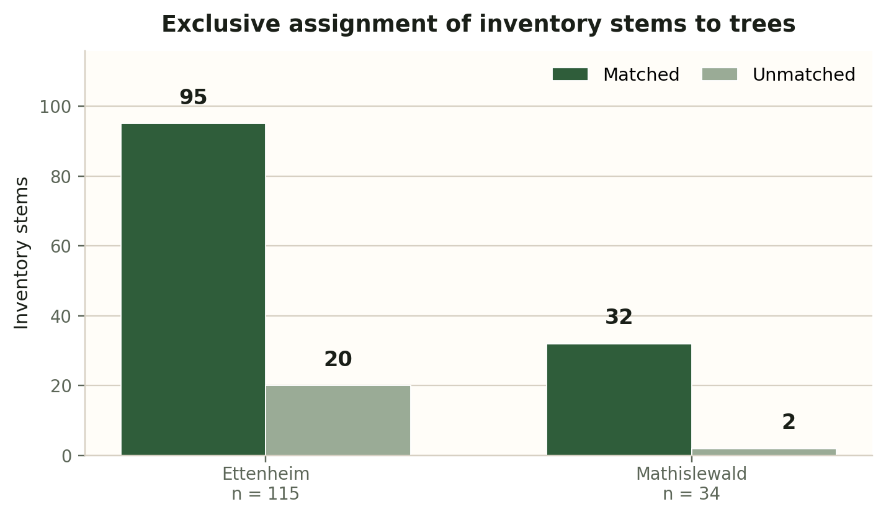
| Site | Inventory in extent | Matched | Unmatched inv. | Manual layers | Unmatched layers |
|---|---|---|---|---|---|
| Ettenheim | 115 | 95 | 20 | 107 | 12 |
| Mathislewald | 34 | 32 | 2 | 189 | 157 |
The 95 Ettenheim and 32 Mathislewald matched stems are the trees retained for DetailView evaluation. Unmatched inventory positions were reviewed with vertical marker poles in the three-dimensional scene. Unmatched manual layers at Mathislewald include a large number of over-split fragments and non-inventory residuals relative to the 32 exclusive matches.
Species classification with DetailView
DetailView was evaluated on the inventory-matched stems under four instance tracks: manual, SegmentAnyTree, ForestMamba and ForestMamba+BluePoint. Stem-level labels used the mode of non-nodata species identifiers inside eachPredInstance. Figure 24 and Table 8 report overall accuracy and macro-averaged F1 for each site and track. Bootstrap percentile intervals for overall accuracy on each site-level row are given where available (\(1000\) resamples).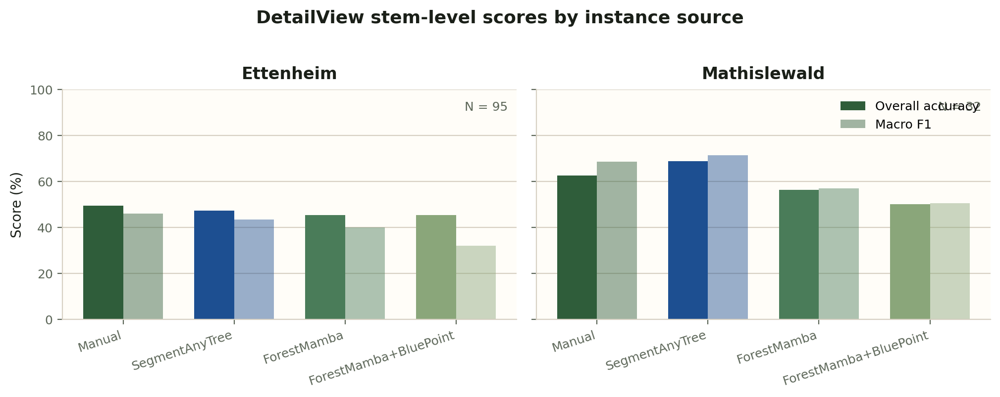
| Site | Instance source | \(N\) | OA | OA 95% CI | Macro P | Macro R | Macro F1 |
|---|---|---|---|---|---|---|---|
| Ettenheim | Manual | 95 | 49.5 | 40.0-60.0 | 62.5 | 44.3 | 46.0 |
| Ettenheim | SegmentAnyTree | 95 | 47.4 | 37.9-56.8 | 60.3 | 43.5 | 43.3 |
| Ettenheim | ForestMamba | 95 | 45.3 | 35.8-54.7 | 59.4 | 40.6 | 39.9 |
| Ettenheim | ForestMamba+BluePoint | 95 | 45.3 | 34.7-54.7 | 46.2 | 37.8 | 31.9 |
| Mathislewald | Manual | 32 | 62.5 | 46.8-78.1 | 86.7 | 57.9 | 68.7 |
| Mathislewald | SegmentAnyTree | 32 | 68.8 | 50.0-84.4 | 86.9 | 61.1 | 71.4 |
| Mathislewald | ForestMamba | 32 | 56.3 | 37.5-71.9 | 96.1 | 45.2 | 56.9 |
| Mathislewald | ForestMamba+BluePoint | 32 | 50.0 | 34.4-65.6 | 67.8 | 42.1 | 50.5 |
| Both (pooled) | Manual | 127 | 52.8 | - | 63.3 | 49.4 | 50.5 |
| Both (pooled) | SegmentAnyTree | 127 | 52.8 | - | 59.8 | 50.7 | 48.8 |
| Both (pooled) | ForestMamba | 127 | 48.0 | - | 61.6 | 47.0 | 46.0 |
| Both (pooled) | ForestMamba+BluePoint | 127 | 46.5 | - | 52.0 | 43.7 | 39.8 |
DetailView on manual instances
On the manual-instance track, overall accuracy was 49.5% at Ettenheim (\(N=95\); bootstrap 95% CI 40.0-60.0) and 62.5% at Mathislewald (\(N=32\); 46.8-78.1). Macro F1 was 46.0% and 68.7% on the same tracks. Class supports on the matched sets were: Ettenheim European beech 64, silver fir 17, Douglas fir 13, European larch 1; Mathislewald Norway spruce 21, European beech 7, silver fir 4.Row-normalized confusion matrices for the manual track are shown in Figures 25 and 26. At Ettenheim the strongest diagonal entry was Douglas fir (92% of true stems predicted as Douglas fir); European beech was 44% on the diagonal. Silver fir was split between correct silver fir and Douglas fir predictions. The single European larch stem was predicted entirely as Douglas fir. At Mathislewald, Norway spruce (67%), European beech (57%) and silver fir (50%) retained the largest correct fractions on the diagonal, with residual mass on neighbouring conifer and broadleaf labels.
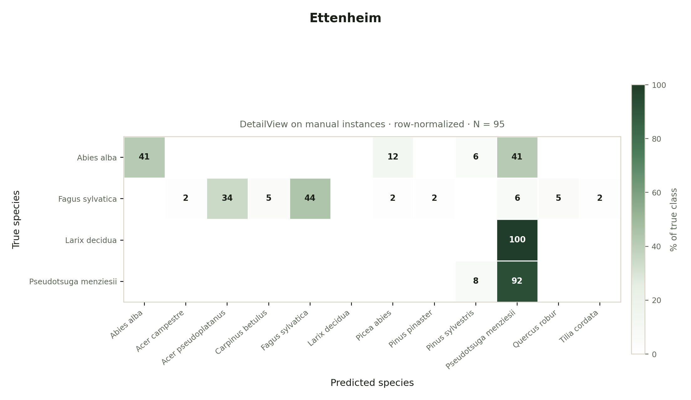
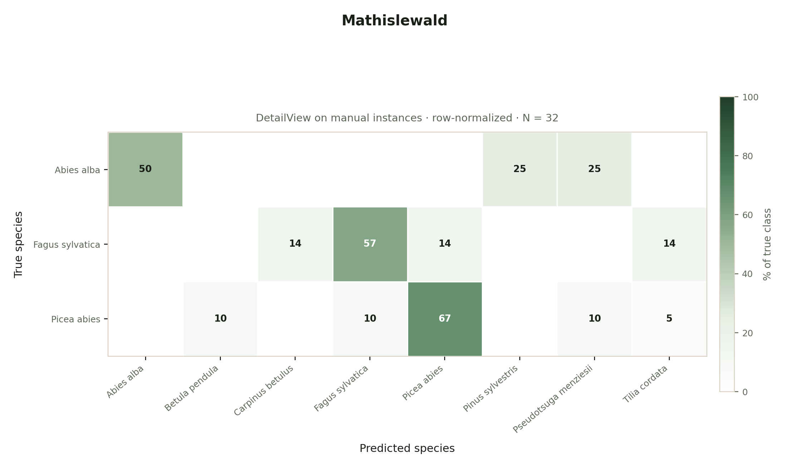
Overall accuracy by \(2\,\mathrm{m}\) height strata and by lifeform (broadleaf versus conifer) is summarised in Figures 27 and 28. On the manual track, Ettenheim broadleaf overall accuracy was 43.8% (\(N=64\)) and conifer overall accuracy was 61.3% (\(N=31\)). Mathislewald broadleaf overall accuracy was 57.1% (\(N=7\)) and conifer overall accuracy was 64.0% (\(N=25\)). Restricting to stems taller than \(5\,\mathrm{m}\) gave manual-track overall accuracies of 48.9% at Ettenheim (\(N=92\)) and 68.2% at Mathislewald (\(N=22\)). Spearman association between stem height and manual-track correctness was non-significant at both sites under \(p<0.05\) (\(\rho=-0.05\), \(p=0.64\) at Ettenheim; \(\rho=0.21\), \(p=0.25\) at Mathislewald).
The same inventory-matched stems were joined to the manual-cloud nearest-neighbour distance and convex-hull volume of their matched geometric layers (Figures 29, 30, 31 and 32; Table 9). At Ettenheim, manual-track overall accuracy was 46.9% in the most crowded NN tercile, 45.2% in the mid tercile and 56.3% in the most open tercile (\(N=32/31/32\)). The Spearman link between NN distance and correctness was positive but non-significant at \(p<0.05\) (\(\rho=0.11\), \(p=0.29\)); automatic tracks were likewise non-significant (SegmentAnyTree \(\rho=0.12\), \(p=0.25\); ForestMamba \(\rho=0.08\), \(p=0.44\); ForestMamba+BluePoint \(\rho=0.06\), \(p=0.59\)). Convex-hull volume showed the opposite gradient: manual OA fell from 68.8% (low volume) through 51.6% (mid) to 28.1% (high volume), with Spearman \(\rho=-0.31\) (\(p=0.0023\)). ForestMamba, SegmentAnyTree and ForestMamba+BluePoint reproduced the same decline.
At Mathislewald (\(N=32\)), the NN pattern did not match the free-space expectation: manual OA was 81.8% in the crowded tercile, 54.5% mid and 50.0% open (\(\rho=-0.18\), \(p=0.32\)). Automatic tracks were also non-significant (SegmentAnyTree \(\rho=-0.18\), \(p=0.34\); ForestMamba \(\rho=-0.24\), \(p=0.19\); ForestMamba+BluePoint \(\rho=-0.33\), \(p=0.066\)). Hull-volume terciles were 54.5% / 70.0% / 63.6% with no significant rank association under \(p<0.05\) (manual \(\rho=0.035\), \(p=0.85\); SegmentAnyTree \(\rho=-0.007\), \(p=0.97\); ForestMamba \(\rho=-0.068\), \(p=0.71\); ForestMamba+BluePoint \(\rho=-0.068\), \(p=0.71\)). With about ten stems per bin, these Mathislewald strata are directional only.
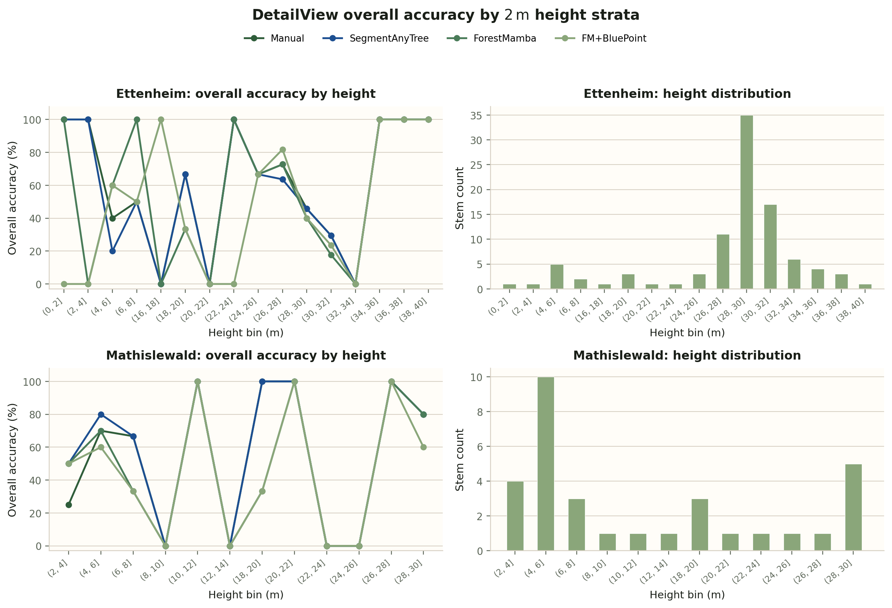
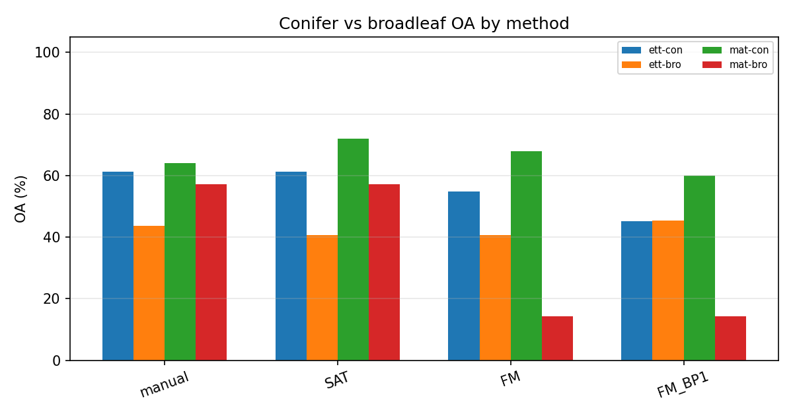
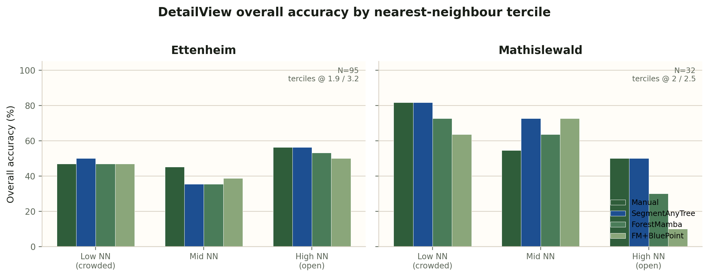
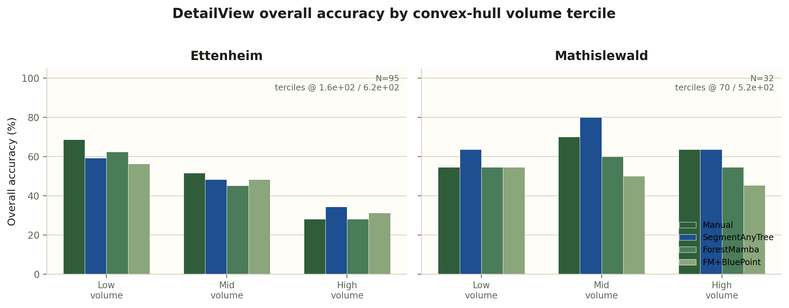
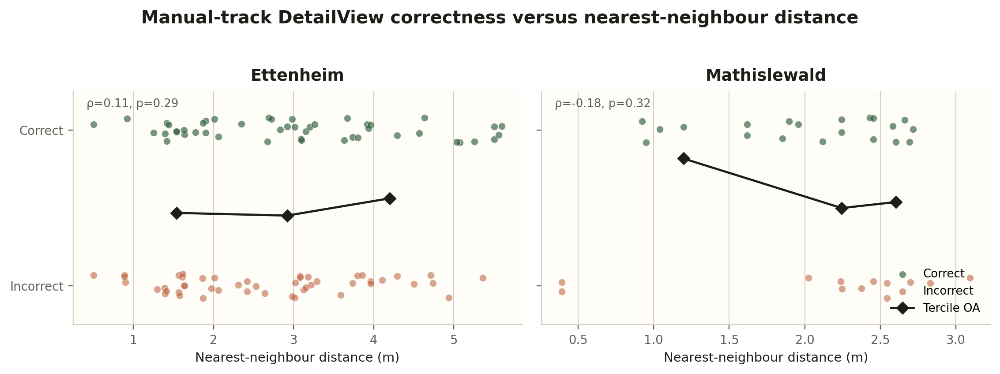
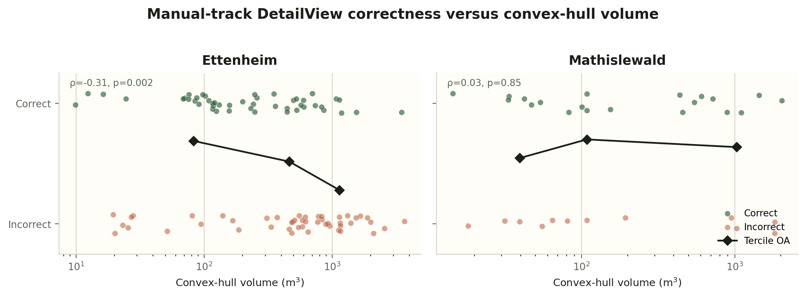
| Site | Covariate | Low / crowded | Mid | High / open |
|---|---|---|---|---|
| Ettenheim | Nearest neighbour | 46.9 | 45.2 | 56.3 |
| Ettenheim | Hull volume | 68.8 | 51.6 | 28.1 |
| Mathislewald | Nearest neighbour | 81.8 | 54.5 | 50.0 |
| Mathislewald | Hull volume | 54.5 | 70.0 | 63.6 |
Propagation of segmentation error into species labels
Holding the inventory-matched stem set fixed and changing only the instance source isolates the taxonomic effect of automatic delineation on those stems; missed trees outside the matched set are not scored. Overall-accuracy contrasts relative to the manual track are shown in Figure 33 and Table 10. At Ettenheim, overall accuracy on SegmentAnyTree instances was 2.1 percentage points below the manual track (paired bootstrap 95% CI for \(\Delta\mathrm{OA}\): \(-5.3\) to \(+8.4\)); ForestMamba and ForestMamba+BluePoint were each 4.2 percentage points below (CIs \(-2.1\) to \(+10.5\) and \(-4.2\) to \(+12.6\)). The ForestMamba+BluePoint minus ForestMamba difference in overall accuracy was 0.0 percentage points (CI \(-7.4\) to \(+7.4\)). All Ettenheim paired intervals include zero. At Mathislewald, overall accuracy on SegmentAnyTree instances was 6.3 percentage points above the manual track (CI \(-15.6\) to \(0.0\)); ForestMamba was 6.3 percentage points below (CI \(-6.3\) to \(+18.8\)) and ForestMamba+BluePoint was 12.5 percentage points below (CI \(-3.1\) to \(+31.3\)). The ForestMamba+BluePoint minus ForestMamba difference was \(-6.3\) percentage points (CI \(-18.8\) to \(+3.1\)). With \(N=32\), these Mathislewald intervals are wide; none of the positive manual-minus-automatic gaps exclude zero, while the SegmentAnyTree advantage versus manual reaches a CI upper bound of zero.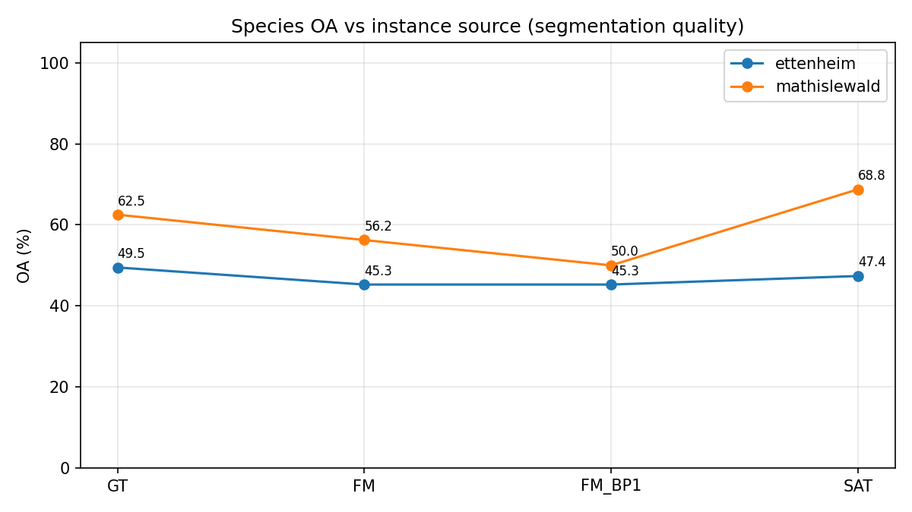
| Contrast | Ettenheim | Mathislewald |
|---|---|---|
| Manual \(-\) SegmentAnyTree | \(+2.1\) [\(-5.3\), \(+8.4\)] | \(-6.3\) [\(-15.6\), \(0.0\)] |
| Manual \(-\) ForestMamba | \(+4.2\) [\(-2.1\), \(+10.5\)] | \(+6.3\) [\(-6.3\), \(+18.8\)] |
| Manual \(-\) ForestMamba+BluePoint | \(+4.2\) [\(-4.2\), \(+12.6\)] | \(+12.5\) [\(-3.1\), \(+31.3\)] |
| ForestMamba+BluePoint \(-\) ForestMamba | \(0.0\) [\(-7.4\), \(+7.4\)] | \(-6.3\) [\(-18.8\), \(+3.1\)] |
Stem-level agreement between DetailView labels from different instance tracks is reported in Figure 34 and Table 11. At Ettenheim, manual versus ForestMamba agreement was 80.0%, manual versus SegmentAnyTree 74.7%, manual versus ForestMamba+BluePoint 69.5% and ForestMamba versus ForestMamba+BluePoint 74.7%. At Mathislewald, manual versus ForestMamba and manual versus SegmentAnyTree were each 81.3%, manual versus ForestMamba+BluePoint was 65.6% and ForestMamba versus ForestMamba+BluePoint was 78.1%.
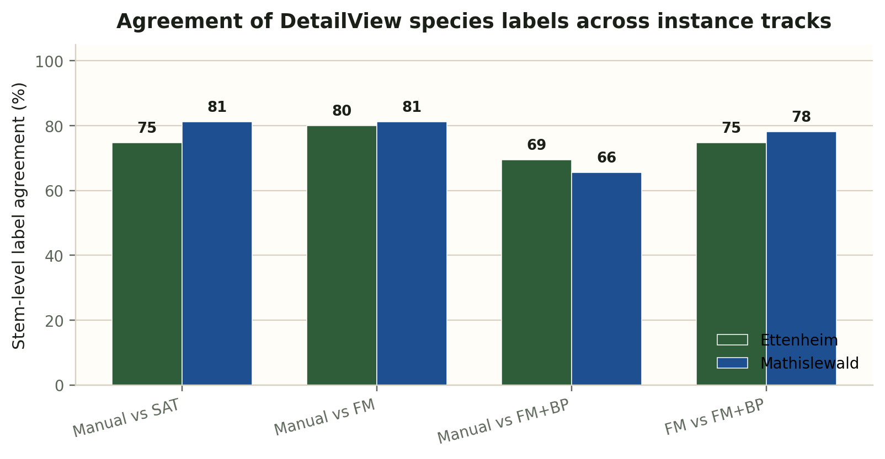
| Pair | Ettenheim (\(N=95\)) | Mathislewald (\(N=32\)) |
|---|---|---|
| Manual vs SegmentAnyTree | 74.7 | 81.3 |
| Manual vs ForestMamba | 80.0 | 81.3 |
| Manual vs ForestMamba+BluePoint | 69.5 | 65.6 |
| ForestMamba vs ForestMamba+BluePoint | 74.7 | 78.1 |
Row-normalized confusion matrices for all four tracks on each site are shown in Figures 35 and 36. Relative to the manual panels, automatic tracks redistribute residual mass among open-set and neighbouring taxa while preserving the same true-class supports. Per-class F1 for inventory-supported taxa under each track is summarised in Figure 37. At Ettenheim, Douglas fir F1 remained comparatively high across tracks, whereas silver fir and European beech F1 declined under ForestMamba and ForestMamba+BluePoint relative to the manual track. At Mathislewald, Norway spruce F1 stayed high under SegmentAnyTree and declined under ForestMamba+BluePoint; European beech and silver fir F1 varied with instance source on the smaller supports.
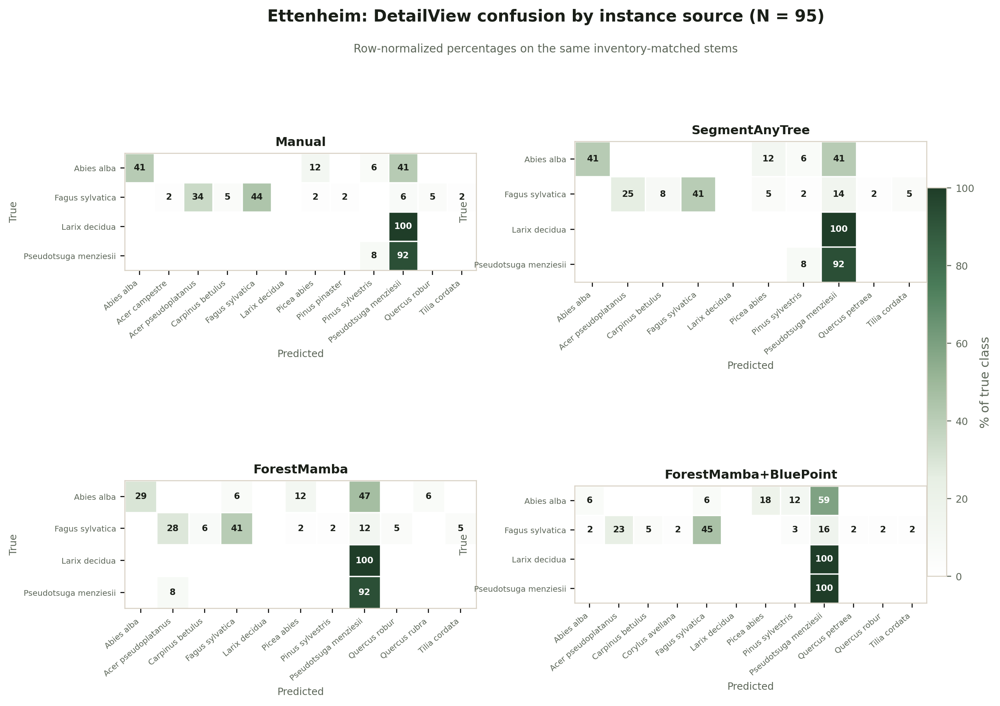
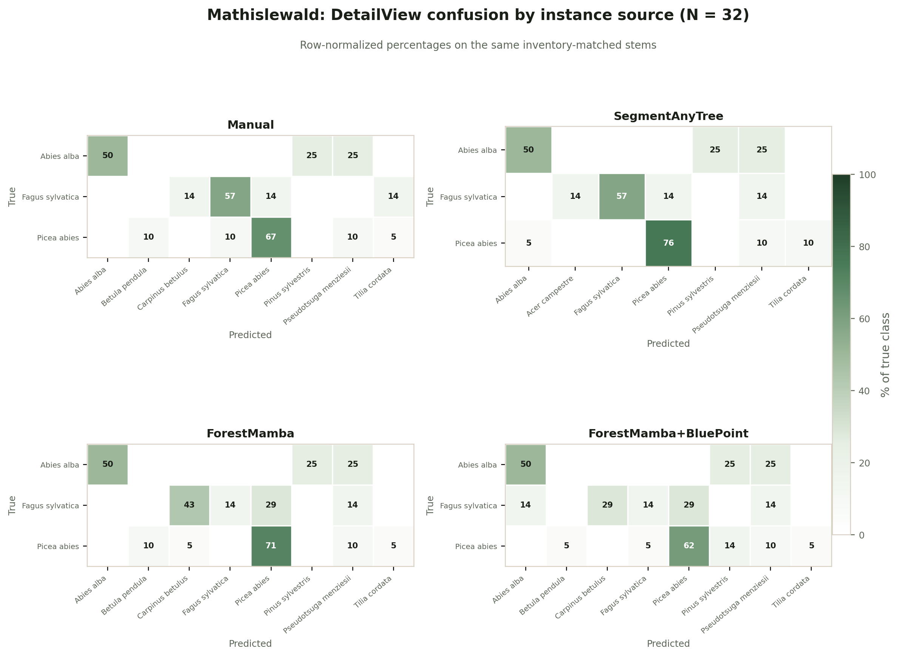
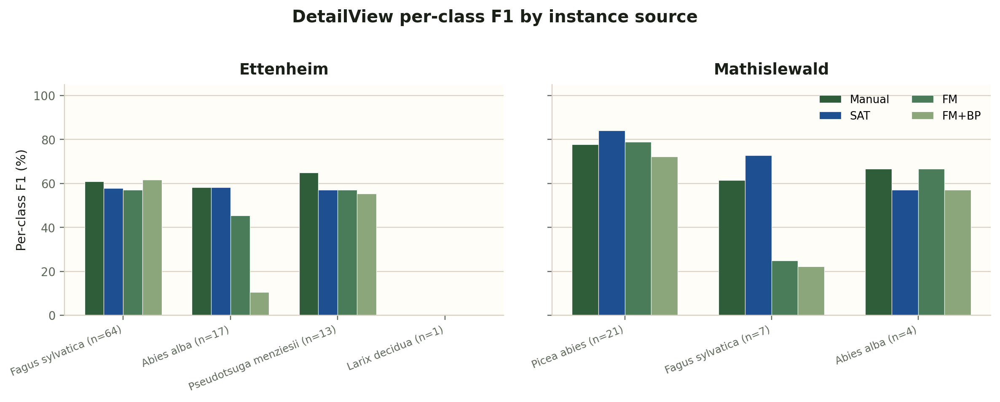
Discussion
Instance segmentation (RQ1)
Reference extent and inventory matching
The Ettenheim reference comprises four completed \(25\,\mathrm{m}\) subplots (approximately \(50\,\mathrm{m}\times 50\,\mathrm{m}\)) with 128 manual ground-truth trees on \(26\,997\,057\) evaluation points (\(22\,714\,670\) tree points). Per-subplot counts of 25, 41, 38 and 24 indicate uneven stocking, with tiles 002 and 003 carrying the largest tree loads. Mathislewald contributes one annotated subplot (approximately \(25\,\mathrm{m}\times 25\,\mathrm{m}\)) with 72 ground-truth trees on \(24\,260\,295\) evaluation points (\(14\,605\,364\) tree points). Tree count per unit area and tree-point density are both higher than on any Ettenheim tile, consistent with a more crowded proximal scene.These \(N_{\mathrm{GT}}\) values define the denominators for recall and related detection metrics and are distinct from the inventory-matched stems used for species classification. Exclusive assignment matched 95 of 115 inventory stems at Ettenheim (20 unmatched) and 32 of 34 at Mathislewald (2 unmatched), while 12 and 157 manual layers remained unmatched. At Ettenheim the census is nearly complete: most inventoried stems map to a unique manual layer, with a modest residual for review. At Mathislewald almost every inventory stem is matched, but the large unmatched-layer residual is attributable to over-split fragments, stubs and non-inventory material relative to a short inventory of 34 stems rather than to 157 omitted field trees. Inventory matching therefore selects the taxonomic evaluation set; it does not redefine the geometric reference.
Qualitative instance colourings place ForestMamba and SegmentAnyTree on the same point support as the manual reference, so metric differences reflect label assignment rather than changes in geometry. Breast-height inventory overlays show markers both coincident with and offset from layer centroids; residual offsets motivate the visual co-registration step and contribute to assignment uncertainty noted under Limitations.
Plot-level performance
At \(\tau=0.5\), ForestMamba achieved high recall on both sites (91.4% Ettenheim; 91.7% Mathislewald), exceeding SegmentAnyTree (75.8%; 23.6%). Coverage ranked identically. Precision diverged by site: ForestMamba over-predicted at Ettenheim (\(N_{\mathrm{pred}}=205\) versus 128 ground-truth trees; precision 57.1%) but approached the ground-truth count at Mathislewald (precision 81.5%). SegmentAnyTree retained moderate precision at Ettenheim (55.7%) and performed poorly at Mathislewald (19.8%), with 69 false positives and 55 false negatives among 86 predictions. Plot-level F1 favoured ForestMamba on both sites under this reference (70.3% versus 64.2% at Ettenheim; 86.3% versus 21.5% at Mathislewald). The between-model gap is modest in the mixed beech stand and large in the denser spruce subplot.ForestMamba therefore operates as a high-recall detector whose precision cost is site-dependent, whereas SegmentAnyTree is competitive at Ettenheim but highly sensitive to local packing and product alignment at Mathislewald. Final SegmentAnyTree labels used absolute-coordinate partner products rather than earlier height-normalized transfers; the Mathislewald result accordingly reflects both model behaviour and product preparation under the shared evaluation protocol.
Ettenheim subplot heterogeneity
ForestMamba F1 ranged from 72.7% (tile 001) to 63.0% (tile 004), with coverage remaining high (80.3-94.3%). SegmentAnyTree F1 ranged from 65.4% (tile 002) to 46.5% (tile 003), where coverage fell to 52.9% and 15 trees were missed. ForestMamba false negatives remained low across tiles (1-5). Error centroids are distributed through subplot interiors rather than confined to edges. Plot-level aggregates therefore mask tile-level failure modes that would matter under operational acceptance thresholds.IoU threshold dependence
Across \(\tau\in\{0.3,\ldots,0.7\}\), ForestMamba F1 at Ettenheim declined only from 70.9% to 66.1%, indicating that accepted matches largely exceed the default gate. SegmentAnyTree declined from 68.9% to 50.3%, indicating a larger share of marginal overlaps. At Mathislewald, ForestMamba declined from 90.2% to 68.0% while remaining usable at high \(\tau\); SegmentAnyTree declined from 43.0% to 10.1%. Per-tree maximum-IoU distributions agree: ForestMamba concentrates at higher best IoU on both sites, whereas SegmentAnyTree at Mathislewald concentrates at low best IoU, so increasing \(\tau\) removes most of its true positives.Error taxonomy and spatial structure
Over- and under-segmentation counts at \(\tau=0.5\) are small relative to misses and leakage-flagged true positives. At Ettenheim, ForestMamba recorded 11 misses and 10 leakage-flagged matches; SegmentAnyTree recorded 31 and 42. At Mathislewald, ForestMamba recorded 6 misses and 14 leakage-flagged matches; SegmentAnyTree recorded 55 misses. Leakage-flagged matches pass the IoU gate while sharing substantial point mass with neighbouring trees or background and therefore indicate delineation defects among detections. SegmentAnyTree's elevated leakage-flag rate at Ettenheim, despite usable F1, shows that many accepted objects remain geometrically impure. Lower ForestMamba leakage-flag counts indicate an advantage in object purity when products are well aligned, beyond detection alone.Plot F1 versus macro hard F1
Macro hard F1 weights each ground-truth tree equally; plot F1 is dominated by the global TP/FP/FN pool. At Ettenheim, ForestMamba macro hard F1 (88.3%; 95% CI 83.2-92.9) exceeds plot F1 (70.3%), consistent with strong delineation among detected trees and a large false-positive penalty at plot scale. SegmentAnyTree values are closer (67.5% versus 64.2%). At Mathislewald, ForestMamba macro and plot scores are similar (82.0% versus 86.3%); SegmentAnyTree remains low on both (19.7% versus 21.5%). The Ettenheim ForestMamba contrast shows that a detection-heavy error mode can coexist with high per-tree overlap once a match exists.Structural covariates
Structural covariates separate two failure regimes under exploratory two-sided Spearman tests (uncorrected \(p<0.05\) for narrative emphasis; Benjamini-Hochberg \(q\) within site in the correlation tables). Non-significant \(p\)-values are retained below. At Ettenheim, local packing is the strongest continuous associate of per-tree hard F1: Spearman \(\rho\) with nearest-neighbour distance is \(0.28\) (\(p=0.0016\), \(q=0.0047\)) for ForestMamba and \(0.41\) (\(p<0.001\), \(q<0.001\)) for SegmentAnyTree, and both remain positive after residualising on point count. Crowded stems (low NN) lose roughly 22 percentage points of ForestMamba hard F1 and 45 points of SegmentAnyTree hard F1 relative to the most open tercile. That pattern matches the expectation that interlocking crowns and short inter-stem gaps increase boundary leakage and missed detections. Height and hull volume move in the same direction as size, but ForestMamba height (\(\rho=0.04\), \(p=0.68\)) and both models' hull-volume correlations (ForestMamba \(\rho=0.08\), \(p=0.36\); SegmentAnyTree \(\rho=0.17\), \(p=0.052\)) do not meet \(p<0.05\); ForestMamba in particular already scores highly across much of the height range, so a height cutoff alone would discard little of its residual error. Readers who prefer a slightly laxer threshold may note that SegmentAnyTree hull volume sits just above \(0.05\).At Mathislewald the ranking reverses. Height and hull volume dominate (SegmentAnyTree \(\rho=0.56\), \(p<0.001\) and \(\rho=0.54\), \(p<0.001\); ForestMamba \(\rho=0.34\), \(p=0.0036\) and \(\rho=0.27\), \(p=0.020\)), whereas nearest-neighbour distance is non-significant (ForestMamba \(\rho=0.16\), \(p=0.19\); SegmentAnyTree \(\rho=0.02\), \(p=0.87\)). The subplot is already tightly packed over a narrow NN range, so residual free space among centroids carries little additional information. What remains is a size and occupancy gradient: small, low-volume objects are almost never recovered by SegmentAnyTree (lowest height and hull terciles near 3-6% hard F1) while larger stems partially recover. ForestMamba retains a higher floor on small objects but still improves toward the upper terciles. Failures are therefore not confined to a single structural niche; Ettenheim errors concentrate where neighbours are close, whereas Mathislewald SegmentAnyTree errors concentrate on small occupancy even when a neighbour gap exists.
Overall, current deep-learning instance segmentation recovers most manually verified trees in these TLS scenes when products are well prepared. Under the shared protocol ForestMamba scores higher on both sites on this reference. Because editing began from preliminary ForestMamba instances, that ranking is conditional on the reference construction and should not be read as an unconditional claim of superiority over SegmentAnyTree on independently delineated ground truth. The models differ in detection versus delineation behaviour: ForestMamba is high-recall and precision-limited at Ettenheim; SegmentAnyTree is more threshold-sensitive and can fail under adverse packing or small-object occupancy. Those differences affect any inventory that assumes one predicted object per physical tree and are consistent with the method- and site-dependent spreads reported in recent TLS and multi-platform benchmarks [29,30,33,35,40]29. Cherlet, W., Dayal, K., Chen, S., Cooper, Z., Disney, M., Hanzl, A., Levick, S., Nightingale, J., Origo, N., Senf, C., Soenens, L., Terryn, L., Van den Broeck, W. A. J., & Calders, K. (2026). Benchmarking tree instance segmentation of terrestrial laser scanning point clouds. ISPRS Journal of Photogrammetry and Remote Sensing, 231, 230-247.https://doi.org/10.1016/j.isprsjprs.2025.10.03340. Wielgosz, M., Puliti, S., Xiang, B., Schindler, K., & Astrup, R. (2024). SegmentAnyTree: A sensor and platform agnostic deep learning model for tree segmentation using laser scanning data. Remote Sensing of Environment, 313, 114367.https://doi.org/10.1016/j.rse.2024.11436733. Xiang, B., Wielgosz, M., Kontogianni, T., Peters, T., Puliti, S., Astrup, R., & Schindler, K. (2024). Automated forest inventory: Analysis of high-density airborne LiDAR point clouds with 3D deep learning. Remote Sensing of Environment, 305, 114078.https://doi.org/10.1016/j.rse.2024.11407835. Henrich, J., van Delden, J., Seidel, D., Kneib, T., & Ecker, A. S. (2024). TreeLearn: A deep learning method for segmenting individual trees from ground-based LiDAR forest point clouds. Ecological Informatics, 84, 102888.https://doi.org/10.1016/j.ecoinf.2024.10288830. Wang, Y., Hyyppä, J., Liang, X., Kaartinen, H., Yu, X., Lindberg, E., Holmgren, J., Qin, Y., Mallet, C., Ferraz, A., Torabzadeh, H., Morsdorf, F., Zhu, L., Liu, J., & Alho, P. (2016). International Benchmarking of the Individual Tree Detection Methods for Modeling 3-D Canopy Structure for Silviculture and Forest Ecology Using Airborne Laser Scanning. IEEE Transactions on Geoscience and Remote Sensing, 54(9), 5011-5027.https://doi.org/10.1109/TGRS.2016.2543225.
Species classification on manual instances (RQ2)
DetailView was evaluated on inventory-matched stems only (\(N=95\) Ettenheim; \(N=32\) Mathislewald). Class supports are imbalanced: Ettenheim comprises 64 European beech, 17 silver fir, 13 Douglas fir and 1 European larch; Mathislewald comprises 21 Norway spruce, 7 European beech and 4 silver fir. Bootstrap intervals for overall accuracy are wide, particularly at Mathislewald (46.8-78.1% on the manual track). Species metrics therefore apply to an inventory-filtered subset of the geometric reference.On manual instances, overall accuracy was 49.5% at Ettenheim and 62.5% at Mathislewald (macro F1 46.0% and 68.7%; pooled OA 52.8%). These values remain well below published FOR-species20K test performance despite use of manually refined instances [31]31. Puliti, S., Lines, E. R., Müllerová, J., Frey, J., Schindler, Z., Straker, A., Allen, M. J., Winiwarter, L., Rehush, N., Hristova, H., Murray, B., et al. (2025). Benchmarking tree species classification from proximally sensed laser scanning data: Introducing the FOR-species20K dataset. Methods in Ecology and Evolution, 16(4), 801-818.https://doi.org/10.1111/2041-210X.14503. Taxonomic transfer, class imbalance and open-set predictions therefore dominate the error budget prior to any change of instance source, in line with long-standing challenges for operational tree-species mapping from remote sensing [3,13,28]28. Fassnacht, F. E., Latifi, H., Sterenczak, K., Modzelewska, A., Lefsky, M., Waser, L. T., Straub, C., & Ghosh, A. (2016). Review of studies on tree species classification from remotely sensed data. Remote Sensing of Environment, 186, 64-87.https://doi.org/10.1016/j.rse.2016.08.01313. Pu, R. (2021). Mapping Tree Species Using Advanced Remote Sensing Technologies: A State-of-the-Art Review and Perspective. Journal of Remote Sensing, 9812624.https://doi.org/10.34133/2021/98126243. Mustafa, Y. T., & Habeeb, H. N. (2014). Object Based Technique for Delineating and Mapping 15 Tree Species using VHR WorldView-2 Imagery. In Remote Sensing for Agriculture, Ecosystems, and Hydrology XVI (pp. 92390G).https://doi.org/10.1117/12.2067280.
Confusion matrices locate the errors. At Ettenheim, Douglas fir reached about 92% on the diagonal, whereas European beech reached only about 44% despite majority support. Silver fir was split between correct silver fir and Douglas fir predictions; the single European larch stem was predicted as Douglas fir. Beech misclassification is the principal local failure, consistent with application of a 33-class European head without local recalibration, including open-set taxa absent from the plot label set and conifer confusion among related softwoods. At Mathislewald, diagonals were higher for Norway spruce (about 67%) and moderate for beech and silver fir (about 57% and 50%), with residual mass on neighbouring labels. With \(N=32\), off-diagonal cells represent few stems and should be treated as directional rather than precise rates. Higher overall accuracy in the spruce-dominated subplot is consistent with stronger recovery of the local majority conifer and a smaller broadleaf share.
Height stratification produced little change: stems taller than \(5\,\mathrm{m}\) yielded 48.9% OA at Ettenheim (\(N=92\)) and 68.2% at Mathislewald (\(N=22\)), and Spearman links between height and correctness were non-significant under \(p<0.05\) (Ettenheim \(\rho=-0.05\), \(p=0.64\); Mathislewald \(\rho=0.21\), \(p=0.25\)). Lifeform collapse at Ettenheim showed higher conifer than broadleaf OA (61.3%, \(N=31\) versus 43.8%, \(N=64\)). The Mathislewald broadleaf subset (\(N=7\)) is too small for a stable lifeform contrast. Majority broadleaf stems at Ettenheim remain the hardest taxonomic target; height filtering alone does not restore species performance on the matched set.
Nearest-neighbour packing and hull volume tell a different story from the segmentation analysis. At Ettenheim, open neighbourhoods only weakly improve species OA (46.9% crowded versus 56.3% open on the manual track; \(\rho=0.11\), \(p=0.29\)), so free space is not significant at \(p<0.05\) as a taxonomic quality filter even though it improves geometric F1. Convex-hull volume instead shows a significant inverse association at \(p<0.05\) (manual OA 68.8% / 51.6% / 28.1% from low to high volume; \(\rho=-0.31\), \(p=0.002\)). Large-occupancy matched stems at Ettenheim are dominated by European beech, the class with the weakest diagonal in the confusion matrix; the hull-volume gradient therefore largely rediscovers the beech failure rather than a pure geometric effect of crown bulk. Automatic instance tracks reproduce the same decline, which indicates that the pattern is taxonomic rather than an artefact of one delineation source.
At Mathislewald the free-space hypothesis is not supported: crowded terciles have higher OA than open ones (81.8% versus 50.0% manual; \(\rho=-0.18\), \(p=0.32\)), and hull volume is flat (manual \(\rho=0.035\), \(p=0.85\)). With \(N=32\) and roughly ten stems per bin, that reversal should not be over-interpreted, but it warns against transferring Ettenheim packing rules to denser spruce subplots. Structural covariates useful for segmentation (packing at Ettenheim; size at Mathislewald) are therefore not interchangeable predictors of DetailView correctness.
Under manual instances, DetailView recovers inventory-compatible labels only moderately well. Accuracy is site- and class-dependent and is limited by open-set transfer into a small local taxonomy. Geometric instance quality and local free space are not the primary constraints on this baseline; class composition and transfer of the European head dominate.
Propagation of segmentation error into stem-level species labels (RQ3)
The same inventory-matched stems were classified under manual, SegmentAnyTree, ForestMamba and ForestMamba+BluePoint instances, isolating instance source as the experimental factor. Overall accuracy therefore conditions on that matched-stem set: trees missed by automatic segmentation outside the set, and unmatched manual layers, do not enter the score. The ablation isolates label propagation given instances rather than end-to-end species-map performance.At Ettenheim, overall accuracy declined by 2.1 percentage points under SegmentAnyTree and by 4.2 under ForestMamba and ForestMamba+BluePoint relative to the manual track. Paired bootstrap 95% intervals for those \(\Delta\mathrm{OA}\) values all include zero, so the Ettenheim gaps are compatible with sampling noise on the matched stems. At Mathislewald, SegmentAnyTree exceeded the manual track by 6.3 percentage points, while ForestMamba and ForestMamba+BluePoint fell short by 6.3 and 12.5 points; paired intervals are wide (\(N=32\)) and do not support a strong causal ranking of instance tracks. BluePoint did not improve species OA relative to ForestMamba (\(0.0\) points at Ettenheim; \(-6.3\) at Mathislewald) and reduced macro F1 on both sites.
Stem-level label agreement between tracks was high for manual versus ForestMamba (80.0% Ettenheim; 81.3% Mathislewald) and manual versus SegmentAnyTree (74.7%; 81.3%), lower for manual versus ForestMamba+BluePoint (69.5%; 65.6%), and intermediate for ForestMamba versus ForestMamba+BluePoint (74.7%; 78.1%). Combined with modest OA gaps, high agreement indicates that many stems retain the same label (correct or incorrect) across instance sources. Segmentation error reassigns a minority of decisions rather than rewriting the taxonomic map.
Multi-track confusion matrices preserve true-class supports and redistribute residual mass among open-set and neighbouring taxa. At Ettenheim, Douglas fir remains comparatively stable across tracks, while beech and silver fir absorb more automatic-track degradation; per-class F1 declines accordingly under ForestMamba and ForestMamba+BluePoint. At Mathislewald, Norway spruce F1 remains high under SegmentAnyTree and weakens under ForestMamba+BluePoint; beech and silver fir fluctuate on small supports. Class-level shifts can therefore occur even when plot-level OA appears nearly flat.
Segmentation error propagates into stem-level species labels but is not the dominant barrier in this study. Ettenheim manual-to-automatic OA gaps are a few percentage points against a manual baseline near 50%. Mathislewald signed gaps are larger in magnitude but rest on a sample too small for strong causal ranking of instance tracks. Closing the taxonomic gap on these matched stems is unlikely without domain adaptation, confidence gating, restriction to local taxa or a larger matched sample [26,28,31]31. Puliti, S., Lines, E. R., Müllerová, J., Frey, J., Schindler, Z., Straker, A., Allen, M. J., Winiwarter, L., Rehush, N., Hristova, H., Murray, B., et al. (2025). Benchmarking tree species classification from proximally sensed laser scanning data: Introducing the FOR-species20K dataset. Methods in Ecology and Evolution, 16(4), 801-818.https://doi.org/10.1111/2041-210X.1450328. Fassnacht, F. E., Latifi, H., Sterenczak, K., Modzelewska, A., Lefsky, M., Waser, L. T., Straub, C., & Ghosh, A. (2016). Review of studies on tree species classification from remotely sensed data. Remote Sensing of Environment, 186, 64-87.https://doi.org/10.1016/j.rse.2016.08.01326. Hamedianfar, A., Mohamedou, C., Kangas, A., & Vauhkonen, J. (2022). Deep learning for forest inventory and planning: a critical review on the remote sensing approaches so far and prospects for further applications. Forestry: An International Journal of Forest Research, 95(4), 451-465.https://doi.org/10.1093/forestry/cpac002.
Limitations
Manual delineation was performed without peer review or double annotation. Thin branches, interlocking crowns and suppressed stems remain ambiguous, and residual layer errors can persist when a reference is built by one person [27,29,37]27. Wilkes, P., Lau, A., Disney, M., Calders, K., Burt, A., Gonzalez de Tanago, J., Bartholomeus, H., Brede, B., & Herold, M. (2017). Data acquisition considerations for terrestrial laser scanning of forest plots. Remote Sensing of Environment, 196, 140-153.https://doi.org/10.1016/j.rse.2017.04.03037. Burt, A., Disney, M., & Calders, K. (2019). Extracting individual trees from lidar point clouds using treeseg. Methods in Ecology and Evolution, 10(3), 438-445.https://doi.org/10.1111/2041-210X.1312129. Cherlet, W., Dayal, K., Chen, S., Cooper, Z., Disney, M., Hanzl, A., Levick, S., Nightingale, J., Origo, N., Senf, C., Soenens, L., Terryn, L., Van den Broeck, W. A. J., & Calders, K. (2026). Benchmarking tree instance segmentation of terrestrial laser scanning point clouds. ISPRS Journal of Photogrammetry and Remote Sensing, 231, 230-247.https://doi.org/10.1016/j.isprsjprs.2025.10.033. An independent re-annotation of a shared subsample would quantify reference uncertainty; absent that control, model scores are distances to this delineation rather than to a consensus reference.Inventory assignment retained a visual component. Geometric rules and attribute tie-breaks handled most pairs, but overlays, a translational shift at Mathislewald and a small override list were used where markers were offset from centroids. Visual judgement introduces additional error where neighbouring stems have similar DBH or height [42-44]42. Liu, G., Wang, J., Dong, P., Chen, Y., & Liu, Z. (2018). Estimating individual tree height and diameter at breast height (DBH) from terrestrial laser scanning (TLS) data at plot level. Forests, 9(7), 398.https://doi.org/10.3390/f907039843. Kükenbrink, D., Marty, M., Ginzler, C., et al. (2022). Benchmarking laser scanning and terrestrial photogrammetry to extract forest inventory parameters in a complex temperate forest. International Journal of Applied Earth Observation and Geoinformation, 113, 102999.https://doi.org/10.1016/j.jag.2022.10299944. Cavalheiro, R., Molina-Valero, J. A., Hodge, G., Howell, T., & Acosta, J. J. (2026). Extraction of genetic test measurements from LiDAR cloud data. Journal of Forestry Research, 37, 58.https://doi.org/10.1007/s11676-026-02007-0. Exclusive one-to-one matching also approximates a stem census that inventory and TLS may define inconsistently.
Time constraints limited spatial coverage: not all clipped subplots were annotated, so the analysed footprints are smaller than the available archives and less representative of stand-level variability. The manual reference was also not constructed from an unlabeled cloud. Editing began from preliminary ForestMamba instances with subsequent splits, merges and cleaning. This accelerated reference building but leaves a residual risk that the reference inherits ForestMamba inductive structure despite major correction. Bias of that form would tend to favour ForestMamba on ambiguous crowns and interlocking boundaries that were resolved during editing in ways consistent with the seed labels, while within-protocol comparisons and SegmentAnyTree product caveats at Mathislewald remain informative. Model ranking in RQ1 is therefore conditional on this reference rather than an unconditional claim against independently delineated ground truth [29,35]35. Henrich, J., van Delden, J., Seidel, D., Kneib, T., & Ecker, A. S. (2024). TreeLearn: A deep learning method for segmenting individual trees from ground-based LiDAR forest point clouds. Ecological Informatics, 84, 102888.https://doi.org/10.1016/j.ecoinf.2024.10288829. Cherlet, W., Dayal, K., Chen, S., Cooper, Z., Disney, M., Hanzl, A., Levick, S., Nightingale, J., Origo, N., Senf, C., Soenens, L., Terryn, L., Van den Broeck, W. A. J., & Calders, K. (2026). Benchmarking tree instance segmentation of terrestrial laser scanning point clouds. ISPRS Journal of Photogrammetry and Remote Sensing, 231, 230-247.https://doi.org/10.1016/j.isprsjprs.2025.10.033.
Species evaluation used inventory-matched stems only; unmatched manual trees do not enter DetailView scoring. Results therefore condition on co-registration and matching success and inherit inventory omission, positional noise and the local species list [28,31]28. Fassnacht, F. E., Latifi, H., Sterenczak, K., Modzelewska, A., Lefsky, M., Waser, L. T., Straub, C., & Ghosh, A. (2016). Review of studies on tree species classification from remotely sensed data. Remote Sensing of Environment, 186, 64-87.https://doi.org/10.1016/j.rse.2016.08.01331. Puliti, S., Lines, E. R., Müllerová, J., Frey, J., Schindler, Z., Straker, A., Allen, M. J., Winiwarter, L., Rehush, N., Hristova, H., Murray, B., et al. (2025). Benchmarking tree species classification from proximally sensed laser scanning data: Introducing the FOR-species20K dataset. Methods in Ecology and Evolution, 16(4), 801-818.https://doi.org/10.1111/2041-210X.14503. They do not fold missed or extra automatic trees outside the matched set into a species-map score. DetailView was applied as an off-the-shelf European FOR-species20K model without retraining or label-set restriction, so open-set predictions are expected. BluePoint was tested only as a ForestMamba post-refinement on matched stems. Each site used a single TLS modality despite ULS and related platforms in the broader ECOSENSE and WaldAgil portfolios; cross-platform splits were out of scope [21,24,31,40]40. Wielgosz, M., Puliti, S., Xiang, B., Schindler, K., & Astrup, R. (2024). SegmentAnyTree: A sensor and platform agnostic deep learning model for tree segmentation using laser scanning data. Remote Sensing of Environment, 313, 114367.https://doi.org/10.1016/j.rse.2024.11436731. Puliti, S., Lines, E. R., Müllerová, J., Frey, J., Schindler, Z., Straker, A., Allen, M. J., Winiwarter, L., Rehush, N., Hristova, H., Murray, B., et al. (2025). Benchmarking tree species classification from proximally sensed laser scanning data: Introducing the FOR-species20K dataset. Methods in Ecology and Evolution, 16(4), 801-818.https://doi.org/10.1111/2041-210X.1450324. Guimarães, N., Pádua, L., Marques, P., Silva, N., Peres, E., & Sousa, J. J. (2020). Forestry Remote Sensing from Unmanned Aerial Vehicles: A Review Focusing on the Data, Processing and Potentialities. Remote Sensing, 12(6), 1046.https://doi.org/10.3390/rs1206104621. White, J. C., Coops, N. C., Wulder, M. A., Vastaranta, M., Hilker, T., & Tompalski, P. (2016). Remote Sensing Technologies for Enhancing Forest Inventories: A Review. Canadian Journal of Remote Sensing, 42(5), 619-641.https://doi.org/10.1080/07038992.2016.1207484. ForestFormer3D supplied the evaluation template but was not run as a predictor [32]32. Xiang, B., Wielgosz, M., Puliti, S., Král, K., Krůček, M., Missarov, A., & Astrup, R. (2025). ForestFormer3D: A Unified Framework for End-to-End Segmentation of Forest LiDAR 3D Point Clouds. In Proceedings of the IEEE/CVF International Conference on Computer Vision (ICCV) (pp. 24321-24331)., and no end-to-end fine-tuning was performed. Bootstrap intervals capture sampling uncertainty on matched stems but not reference-label uncertainty or spatial autocorrelation within contiguous subplots. Per-tree Spearman associations therefore describe structure within the annotated footprints rather than independent plot replicates.
Scope and generalizability
The study is a local benchmark on two university research forests in southwestern Germany: a larger beech-dominated mixed stand at Ettenheim and a smaller spruce-dominated subplot at Mathislewald. Extrapolation to boreal plantations, tropical forests, leaf-off deciduous scenes or airborne-only inventories requires new references. Within temperate mixed TLS settings, the results are most informative for relative model behaviour under a shared protocol, for the magnitude of segmentation-to-species propagation on inventory-matched stems, and for the cost of building usable geometric and taxonomic references. Two ecologically distinct sites strengthen external validity; small matched \(N\) at Mathislewald, partial subplot coverage and the lack of an independent re-annotation weaken it.Implications
For detection-oriented use, ForestMamba is viable at plot scale on these scenes if false positives are acceptable or filterable. For delineation-sensitive products (crown competition, biomass allometry, clean stem extraction), leakage-flag and \(\tau\)-sweep diagnostics are as informative as headline F1. Nearest-neighbour packing is a useful Ettenheim QA cue for geometric quality; at Mathislewald, object size and hull occupancy are more informative than residual centroid spacing. SegmentAnyTree remains a relevant Ettenheim baseline but requires careful absolute-coordinate product preparation.Off-the-shelf DetailView is not a drop-in replacement for field taxonomy on these forests. Constrained local label sets, fine-tuning or human oversight remain necessary before automated species layers support management or ecological inference. Because instance-source effects on stem-level labels are modest relative to the manual-instance taxonomic gap, and because free-space and hull-volume filters do not recover beech performance at Ettenheim, investment in segmentation or packing-based stem triage alone will not close that taxonomic gap on matched stems. The paired manual-plus-inventory reference and dual instance/species protocol remain a reusable template for research forests that already hold TLS and stem maps.
Future research
Priority extensions are: (i) complete annotation of remaining clipped subplots and additional stands, with an independent re-annotation control sample; (ii) enlarge the inventory-matched species set and test DetailView variants restricted or recalibrated to local taxa, with confidence gating and explicit open-set handling [28,31]31. Puliti, S., Lines, E. R., Müllerová, J., Frey, J., Schindler, Z., Straker, A., Allen, M. J., Winiwarter, L., Rehush, N., Hristova, H., Murray, B., et al. (2025). Benchmarking tree species classification from proximally sensed laser scanning data: Introducing the FOR-species20K dataset. Methods in Ecology and Evolution, 16(4), 801-818.https://doi.org/10.1111/2041-210X.1450328. Fassnacht, F. E., Latifi, H., Sterenczak, K., Modzelewska, A., Lefsky, M., Waser, L. T., Straub, C., & Ghosh, A. (2016). Review of studies on tree species classification from remotely sensed data. Remote Sensing of Environment, 186, 64-87.https://doi.org/10.1016/j.rse.2016.08.013; (iii) repeat the instance benchmark with fully independent manual delineation on a subset and with additional or fine-tuned predictors [32,35,41]35. Henrich, J., van Delden, J., Seidel, D., Kneib, T., & Ecker, A. S. (2024). TreeLearn: A deep learning method for segmenting individual trees from ground-based LiDAR forest point clouds. Ecological Informatics, 84, 102888.https://doi.org/10.1016/j.ecoinf.2024.10288832. Xiang, B., Wielgosz, M., Puliti, S., Král, K., Krůček, M., Missarov, A., & Astrup, R. (2025). ForestFormer3D: A Unified Framework for End-to-End Segmentation of Forest LiDAR 3D Point Clouds. In Proceedings of the IEEE/CVF International Conference on Computer Vision (ICCV) (pp. 24321-24331).41. Nguyen, T. T., Vu, T. A., Le, D. V., Kawanishi, Y., Komamizu, T., Ide, I., & Kattenborn, T. (2026). ForestMamba: Sparse Mamba with Geometry-guided Queries for 3D Forest Point Cloud Segmentation.https://doi.org/10.48550/arXiv.2606.01549https://arxiv.org/abs/2606.01549; (iv) add ULS or other platform tracks under the same matched stems, following related cross-platform species and instance benchmarks [24,31,40]31. Puliti, S., Lines, E. R., Müllerová, J., Frey, J., Schindler, Z., Straker, A., Allen, M. J., Winiwarter, L., Rehush, N., Hristova, H., Murray, B., et al. (2025). Benchmarking tree species classification from proximally sensed laser scanning data: Introducing the FOR-species20K dataset. Methods in Ecology and Evolution, 16(4), 801-818.https://doi.org/10.1111/2041-210X.1450340. Wielgosz, M., Puliti, S., Xiang, B., Schindler, K., & Astrup, R. (2024). SegmentAnyTree: A sensor and platform agnostic deep learning model for tree segmentation using laser scanning data. Remote Sensing of Environment, 313, 114367.https://doi.org/10.1016/j.rse.2024.11436724. Guimarães, N., Pádua, L., Marques, P., Silva, N., Peres, E., & Sousa, J. J. (2020). Forestry Remote Sensing from Unmanned Aerial Vehicles: A Review Focusing on the Data, Processing and Potentialities. Remote Sensing, 12(6), 1046.https://doi.org/10.3390/rs12061046; and (v) release reference clouds, match manifests and evaluation scripts under a clear license. Structural DBH/height error budgets and multi-temporal revisit are natural subsequent steps once instance and species layers are stable [42,43,47-51]42. Liu, G., Wang, J., Dong, P., Chen, Y., & Liu, Z. (2018). Estimating individual tree height and diameter at breast height (DBH) from terrestrial laser scanning (TLS) data at plot level. Forests, 9(7), 398.https://doi.org/10.3390/f907039843. Kükenbrink, D., Marty, M., Ginzler, C., et al. (2022). Benchmarking laser scanning and terrestrial photogrammetry to extract forest inventory parameters in a complex temperate forest. International Journal of Applied Earth Observation and Geoinformation, 113, 102999.https://doi.org/10.1016/j.jag.2022.10299947. Calders, K., Newnham, G., Burt, A., Murphy, S., Raumonen, P., Herold, M., Culvenor, D., Avitabile, V., Disney, M., Armston, J., & Kaasalainen, M. (2015). Nondestructive estimates of above-ground biomass using terrestrial laser scanning. Methods in Ecology and Evolution, 6(2), 198-208.https://doi.org/10.1111/2041-210X.1230148. Disney, M., Burt, A., Calders, K., Schaaf, C., & Stovall, A. (2018). Weighing trees with lasers: advances, challenges and opportunities. Interface Focus, 8(2), 20170048.https://doi.org/10.1098/rsfs.2017.004850. Tian, L., Wu, X., Tao, Y., Li, M., Qian, C., Liao, L., & Fu, W. (2023). Review of Remote Sensing-Based Methods for Forest Aboveground Biomass Estimation: Progress, Challenges, and Prospects. Forests, 14(6), 1086.https://doi.org/10.3390/f1406108651. Pourdelan, H., Xiang, Z., Stewart, H., Nicholson, C., Tomko, M., & Khoshelham, K. (2026). Direct Estimation of Tree Volume and Aboveground Biomass Using Deep Regression with Synthetic Lidar Data.https://doi.org/10.48550/arXiv.2603.04683https://arxiv.org/abs/2603.0468349. Riedel, T., & Kändler, G. (2017). . Forstarchiv, 88(2), 31-38.https://doi.org/10.4432/0300-4112-88-31.Conclusions
We constructed manually refined TLS instance references for Ettenheim and Mathislewald, linked inventory species where exclusive matching succeeded, and benchmarked ForestMamba and SegmentAnyTree for detection and overlap together with DetailView for species classification on manual and automated instances.
For individual-tree recovery (RQ1), under the shared protocol and this manually refined reference ForestMamba achieved higher plot-level scores on both sites: high recall with usable F1 at Ettenheim and stronger balanced scores at Mathislewald. SegmentAnyTree remained competitive at Ettenheim but was much weaker at Mathislewald in the final absolute-coordinate comparison. Those rankings are conditional on a ForestMamba-seeded reference. Detection versus delineation diagnostics (threshold sweeps, leakage flags, macro hard F1) show that headline F1 alone understates how models differ.
For species labels on manual instances (RQ2), off-the-shelf DetailView reached only about half overall accuracy at Ettenheim and about three-fifths at Mathislewald on inventory-matched stems. Open-set transfer and local class imbalance dominate that gap. For propagation of instance-source effects into stem-level labels (RQ3), changing the instance track on the same matched stems moved overall accuracy by only a few points at Ettenheim and by noisier but still secondary amounts at the smaller Mathislewald matched set. That ablation does not score end-to-end species maps (missed or extra trees outside the matched set are not in the OA). Better segmentation helps only modestly on these stems; it does not by itself close the taxonomic gap.
The paired geometric and inventory reference, and the dual instance/species evaluation chain, provide a reusable local benchmark template. Priority next steps are independent re-annotation controls, larger matched samples, local species-head adaptation and cross-platform extensions using the broader ECOSENSE and WaldAgil sensing archives.
Acknowledgements
I thank my first supervisor, Prof. Dr. Teja Kattenborn (Chair of Sensor-based Geoinformatics, University of Freiburg), for guidance throughout this thesis and for the opportunity to work within the geosense research environment. I thank my second supervisor, Dr. Julian Frey (Chair of Forest Growth and Dendroecology, University of Freiburg), for continuous advice on proximal sensing, individual-tree workflows and the practical framing of the benchmark.I am grateful to Kilian Gerberding for running the DetailView inference on the inventory-matched packages across instance tracks, which made the species-classification evaluation possible. I also thank Maximilian Weidenfeller and Katja Kröner for help with locating and interpreting project data and for answering many practical questions along the way.
This work builds on data and infrastructure of the University of Freiburg, including the ECOSENSE research forest at Ettenheim and the Mathislewald research and teaching forest in the context of WaldAgil. I thank the wider teams who collected and curated the field inventories and terrestrial laser-scanning products used here.
Finally, I acknowledge the developers of the open methods that underpin this benchmark: Maciej Wielgosz and colleagues for SegmentAnyTree; Trung Thanh Nguyen and colleagues for ForestMamba; and Dr. Julian Frey together with Stefano Puliti and the FOR-species20K collaborators for DetailView and the associated species-classification ecosystem. Their publicly available models and documentation made the comparative evaluation feasible.